前言
前言
本文描述了各个sample要展示的场景/数据流，应用场景、功能特性等以及相关注意事项，供开发者参考，方便客户快速适配修改和运行sample。
与本文档相对应的产品版本如下。
本文档（本指南）主要适用于以下工程师：
- 技术支持工程师
- 软硬件开发工程师
在本文中可能出现下列标志，它们所代表的含义如下。


修订记录累积了每次文档更新的说明。最新版本的文档包含以前所有文档版本的更新内容。
Sample使用注意事项
MMZ buffer进程隔离
mmz buffer进程隔离特性介绍参见《MPP 媒体处理软件 V6.0 开发参考》的“1.4 mmz buffer进程隔离”章节。
Sensor适配说明
由于版本默认sensor为HY006-3814-0011，如需适配新sensor，主要涉及以下适配改动：
-
修改sensor时钟，相关寄存器配置说明参考《Hi3516CV610 超高清智慧视觉 SoC 用户指南》的“3.2.4 CRG寄存器概览”小节（基址是 0x1101_0000）。
适配sys_config，参考SENSOR_NAME_HY006_3814_0011宏定义适配新增新sensor宏定义SENSOR_NAME_xxx和对应代码流程，以下以sensor时钟24M为例：
-
sys_config修改
位置：SDK包/smp/a7_linux/source/interdrv/sysconfig/
修改点：
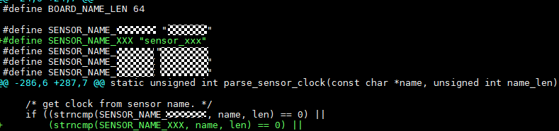
-
load3516cv610_xx适配传参
位置：SDK包/smp/a7_linux_source/out/ko/load3516cv610
修改点：
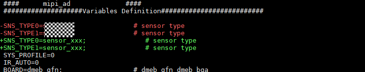
-
-
适配sample
编译sample前，需要确定使用哪种sensor，默认为HY006_3814_0011_MIPI_4M_30FPS_10BIT，如新增sensor，可搜索参考HY006_3814_0011_MIPI_4M_30FPS_10BIT宏定义相关修改适配，确定下来后才能对sample进行编译，并在加载ko前修改load脚本或通过传入命令参数的方式进行加载。
修改的文件：Makefile.param
位置：SDK包/soc/drivers/mpp/sample/
修改点：
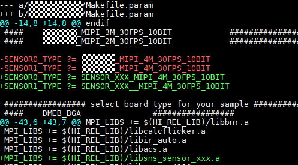
快速入门指导
aiisp
本章介绍如何使用aibnr模型，实现低照度降噪的效果。
代码流程
- 启动数据流通路，从前往后分别启动各媒体模块（VI、VPSS、VENC......）。
- 初始化aibnr模块，详细使用参考接口ss_mpi_aibnr_init。
- 加载aibnr的模型文件，详细使用参考接口ss_mpi_aibnr_load_model。
- 设置aibnr的算法相关配置参数，详细使用请参考接口ss_mpi_aibnr_set_cfg。
- 使能aibnr的数据流开关，详细使用请参考接口ss_mpi_aibnr_enable。
- 设置aibnr的属性，详细使用请参考接口ss_mpi_aibnr_set_attr。
-
停止业务时，需要先关闭aibnr数据流开关，再卸载aibnr的模型文件，最后去初始化aibnr模块，详细使用请参考接口ss_mpi_aibnr_disable、ss_mpi_aibnr_unload_model、ss_mpi_aibnr_exit。
 说明：
说明：
本章节涉及的相关接口均参考《AIISP 开发参考》“AIBNR API参考”章节。
加载ko脚本时需要指定模块参数-profile 0或者-profile 2。
线性普通模型推荐在12帧场景下应用，线性时域pro模型推荐在5帧场景下应用。
具体操作流程如图1所示。

sample用例介绍
AIBNR线性普通模式
- 应用场景：AIBNR线性普通场景。
- 用例功能：线性普通模式下，通过高ISO模型和低ISO模型的切换，实现不同照度下的图像清晰度提升。
-
操作流程
可参考代码流程章节，其中加载的aibnr模型包含高ISO和低ISO两种模型，既可以手动指定使用高ISO模型或低ISO模型，又可以根据配置的ISO段自动选择模型，参考接口ss_mpi_aibnr_set_model_attr。
-
数据流图如图1所示。

AIBNR线性时域模式

audio
audio总共提供了6个sample用例，主要包括AI、AENC、ADEC、AO四大模块的接口调用流程，以下对各个用例分别进行介绍。
本节涉及的相关接口参考《MPP 媒体处理软件 V6.0 开发参考》的“音频”章节。
sample_audio_ai_ao
- 用例功能：主要演示AI录音，AO播放相关接口调用流程。一般没有AI录音送AO播放的实际应用场景。
-
代码流程
-
音频模块初始化，参考ss_mpi_audio_init接口。
- 设置AI设备属性，使能AI设备和通道，参考ss_mpi_ai_set_pub_attr、ss_mpi_ai_enable、ss_mpi_ai_enable_chn等接口。
- 设置AO设备属性，使能AO设备和通道，参考ss_mpi_ao_set_pub_attr、ss_mpi_ao_enable、ss_mpi_ao_enable_chn等接口。
- 配置内置ACODEC的采样率、输入方式、输入输出音量，参考OT_ACODEC_SET_I2S1_FS、OT_ACODEC_SET_MIXER_MIC、OT_ACODEC_SET_INPUT_VOLUME、OT_ACODEC_SET_OUTPUT_VOLUME等ioctl接口。
-
绑定AO通道到AI通道，或者创建线程从AI获取音频帧送往AO进行播放，参考ss_mpi_sys_bind、ss_mpi_ai_get_frame、ss_mpi_ao_send_frame等接口。
-
数据流图
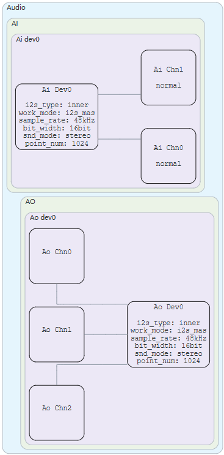
sample_audio_ai_aenc
- 用例功能：主要演示AI录音，AENC编码相关接口调用流程。
-
代码流程
-
音频模块初始化，参考ss_mpi_audio_init接口。
- 设置AI设备属性，使能AI设备和通道，参考ss_mpi_ai_set_pub_attr、ss_mpi_ai_enable、ss_mpi_ai_enable_chn等接口。
- 配置内置ACODEC的采样率、输入方式、输入输出音量，参考OT_ACODEC_SET_I2S1_FS、OT_ACODEC_SET_MIXER_MIC、OT_ACODEC_SET_INPUT_VOLUME、OT_ACODEC_SET_OUTPUT_VOLUME等ioctl接口。
- 创建编码通道，参考ss_mpi_aenc_create_chn接口。
-
绑定AI通道到AENC通道，或者创建线程从AI获取音频帧送往AENC进行编码，参考ss_mpi_sys_bind、ss_mpi_ai_get_frame、ss_mpi_aenc_send_frame等接口。
-
数据流图
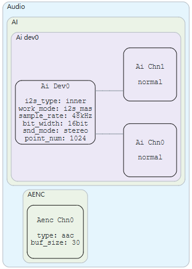
sample_audio_adec_ao
- 用例功能：主要演示ADEC解码，AO播放相关接口调用流程。
-
代码流程
-
音频模块初始化，参考ss_mpi_audio_init接口。
- 创建解码通道，参考ss_mpi_adec_create_chn接口。
- 设置AO设备属性，使能AO设备和通道，参考ss_mpi_ao_set_pub_attr、ss_mpi_ao_enable、ss_mpi_ao_enable_chn等接口。
- 配置内置ACODEC的采样率、输入方式、输入输出音量，参考OT_ACODEC_SET_I2S1_FS、OT_ACODEC_SET_MIXER_MIC、OT_ACODEC_SET_INPUT_VOLUME、OT_ACODEC_SET_OUTPUT_VOLUME等ioctl接口。
- 绑定ADEC通道到AO通道，参考ss_mpi_sys_bind接口。
-
创建线程从码流文件中读取数据送往解码通道进行解码，参考ss_mpi_adec_send_end_of_stream接口。
-
数据流图
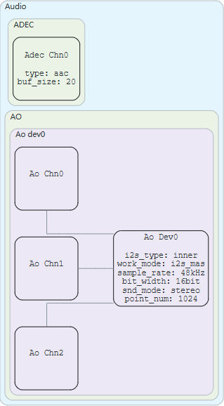
sample_audio_ai_vqe_process_ao
- 用例功能：主要演示AI录音并开启声音质量增强（VQE）功能，AO播放相关接口调用流程。
-
代码流程
-
音频模块初始化，参考ss_mpi_audio_init接口。
- 设置AI设备属性，使能AI设备和通道，参考ss_mpi_ai_set_pub_attr、ss_mpi_ai_enable、ss_mpi_ai_enable_chn等接口。
- 设置AI通道VQE属性，使能通道VQE，参考ss_mpi_ai_set_record_vqe_attr、ss_mpi_ai_set_talk_vqe_attr、ss_mpi_ai_set_talk_vqe_v2_attr、ss_mpi_ai_enable_vqe等接口。
- 设置AO设备属性，使能AO设备和通道，参考ss_mpi_ao_set_pub_attr、ss_mpi_ao_enable、ss_mpi_ao_enable_chn等接口。
- 配置内置ACODEC的采样率、输入方式、输入输出音量，参考OT_ACODEC_SET_I2S1_FS、OT_ACODEC_SET_MIXER_MIC、OT_ACODEC_SET_INPUT_VOLUME、OT_ACODEC_SET_OUTPUT_VOLUME等ioctl接口。
-
绑定AO通道到AI通道，或者创建线程从AI获取音频帧送往AO进行播放，参考ss_mpi_sys_bind、ss_mpi_ai_get_frame、ss_mpi_ao_send_frame等接口。
-
数据流图
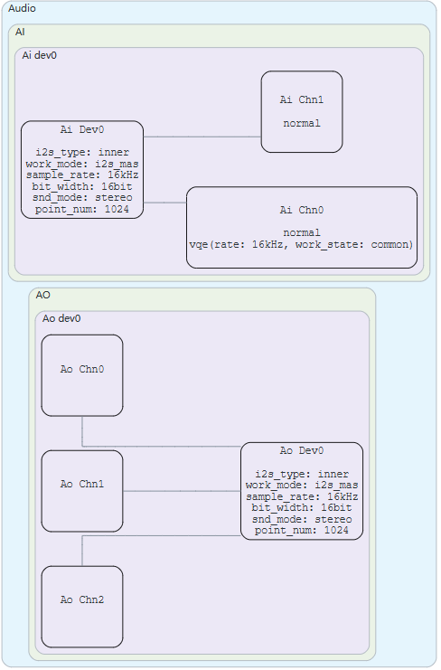
sample_audio_ai_to_ao_sys_chn
- 用例功能：主要演示AI录音，AO系统音通道播放相关接口调用流程。
-
代码流程
-
音频模块初始化，参考ss_mpi_audio_init接口。
- 设置AI设备属性，使能AI设备和通道，参考ss_mpi_ai_set_pub_attr、ss_mpi_ai_enable、ss_mpi_ai_enable_chn等接口。
- 设置AO设备属性，使能AO设备和通道，参考ss_mpi_ao_set_pub_attr、ss_mpi_ao_enable、ss_mpi_ao_enable_chn等接口。
- 使能AO系统音通道，系统音通道号为OT_AO_SYS_CHN_ID，参考ss_mpi_ao_enable_chn接口。
- 配置内置ACODEC的采样率、输入方式、输入输出音量，参考OT_ACODEC_SET_I2S1_FS、OT_ACODEC_SET_MIXER_MIC、OT_ACODEC_SET_INPUT_VOLUME、OT_ACODEC_SET_OUTPUT_VOLUME等ioctl接口。
-
绑定AO通道到AI通道，或者创建线程从AI获取音频帧送往AO进行播放，参考ss_mpi_sys_bind、ss_mpi_ai_get_frame、ss_mpi_ao_send_frame等接口。
-
数据流图
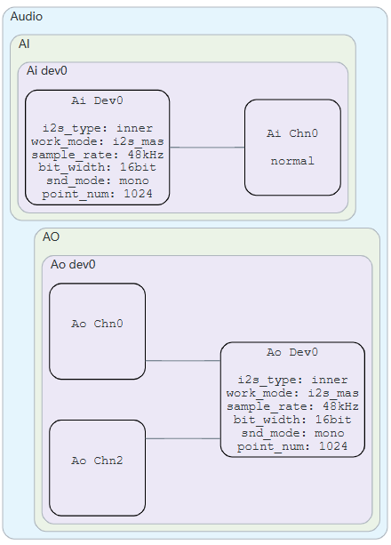
sample_audio_ai_to_ext_resample
- 用例功能：主要演示AI录音，使用vqe_res重采样功能库进行重采样相关接口调用流程。
-
代码流程
-
音频模块初始化，参考ss_mpi_audio_init接口。
- 设置AI设备属性，使能AI设备和通道，参考ss_mpi_ai_set_pub_attr、ss_mpi_ai_enable、ss_mpi_ai_enable_chn等接口。
- 配置内置ACODEC的采样率、输入方式、输入输出音量，参考OT_ACODEC_SET_I2S1_FS、OT_ACODEC_SET_MIXER_MIC、OT_ACODEC_SET_INPUT_VOLUME、OT_ACODEC_SET_OUTPUT_VOLUME等ioctl接口。
- 获取vqe_res库对外接口符号，可以使用静态注册方式，也可以使用动态加载的方式，参考OT_VQE_USE_STATIC_MODULE_REGISTER功能宏的使用。
-
创建线程从AI获取帧，送vqe_res库处理接口进行重采样，将重采样后的数据存为文件，参考ss_mpi_ai_get_frame、ss_resample_process接口。
-
数据流图
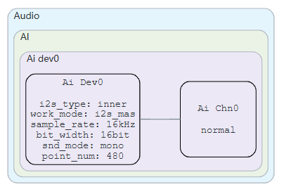
awb_online_calibration
- 应用场景：量产标定AWB静态系数。
- 用例功能：通过修正AWB的静态白平衡系数实现个体差异校正。
-
操作流程
-
初始化vio模块，参考函数sample_vio_sys_init。
- 启动vi模块，参考函数sample_vio_start_vi。
- vi绑定venc，参考函数sample_comm_vi_bind_venc。
- 等待ae状态稳定，参考函数awb_calib_check_ae_status。
- 标定AWB静态系数，参考函数awb_calib_get_corr_gain，参考接口ss_mpi_isp_get_lightbox_gain。
- 获取标定结果，参考接口ot_isp_awb_calibration_gain。
- 去初始化vi模块，参考函数sample_awb_cali_stop_prev。
以上操作流程的接口均参考《ISP开发参考》文档。
-
数据流图
详细数据流图请参考《ISP开发参考》“AWB量产标定工具”章节。
bcd
bcd sample用于演示婴儿哭声检测算法BCD相关接口调用流程。
代码流程
- 初始化哭声检测模块，配置算法参数，参考ss_baby_crying_detection_init接口。
- 从哭声码流文件循环读取数据送算法处理接口进行检测，算法检测到哭声后会调用配置的回调函数，参考ss_baby_crying_detection_process接口。
- 去初始化哭声检测模块，参考ss_baby_crying_detection_deinit接口。
本节涉及的相关接口参考《哭声检测 API参考》。
calcflicker
应用场景：本用例针对如电视机，电脑显示屏等有固定频率频闪的显示设备设计的频闪检测算法。对这种大屏幕进行频闪检测，并设置对应的曝光时间，进行自动抗闪。
说明：
详细功能描述及相关接口请参考《ISP开发参考》“Auto Flicker Type Detection”章节。
本章节介绍如果使用频闪检测sample检测画面中出现的工频闪。具体请参考《ISP开发参考》“工频闪类型自适应Sample用例处理流程”章节。
fast_ae
本章节介绍如何使用fast_ae做通路快启，快速收敛曝光。
代码流程
- 使用sample_comm_vi_start_sensor启动mipi_rx和时钟。
- 调用sensor接口pfn_set_init配置sensor初始化序列和曝光，以及ae快速收敛使能。
- 通路初始化(不包含sensor)。
- 待通路收敛后，调用hi_mpi_isp_query_exposure_info，获取并打印收敛后曝光参数。
- 保存码流，退出通路。
sample使用指南
快速收敛曝光需区分有光敏快速收敛和无光敏快速收敛。
有光敏快速收敛
- 不同照度下，执行fast_ae获取收敛后状态，将光敏输出与fast_ae结果绑定，绘制成曝光表。
- 使用快启时，通过光敏值输出，查询曝光表中对应的曝光结果。
- 将曝光结果作为初始值用于fast_ae的输入实现快速收敛。
无光敏快速收敛
在最常用的场景下，执行fast_ae获取收敛后状态，将该结果作为fast_ae初始值。
ir_auto
在光照条件不好（如夜晚）的场景，白天使用的滤光片成像效果不好，需要切换到红外滤光片，提升成像效果。本章节介绍如何实现自动切换滤光片的功能。
代码流程
- 配置ir_auto管脚复用，参考《SYS_CONFIG 配置指南》"IR_AUTO管脚复用”章节。
- 启动数据通路，从前往后分别启动各媒体模型（VI、VPSS、VENC）。
- 启动切换滤光片的线程。
- 获取切换状态（ir_switch），详细使用请参考ss_mpi_isp_ir_auto接口（具体参考《ISP开发参考》文档）。
- 根据切换状态（ir_switch），切换滤光片并调整颜色参数（饱和度、WB和CCM的参数，红外场景为黑白场景，不需要调整颜色）。
代码流程如图1所示。

sample用例介绍
须知：
请将ir calibaration中获取到的Rgain和Bgain范围值作为ir auto的参数输入。
ir calibration
- 应用场景：ss_mpi_isp_ir_auto参数标定：获取红外场景下的WB的Rgain和Bgain范围，此范围为自动切换滤光片的判断标准。
- 用例功能：红外滤光片下，输出ss_mpi_isp_ir_auto参数中WB的Rgain和Bgain范围：rg_max、rg_min、bg_max、bg_min。
-
操作流程
-
启动切换滤光片的线程
- 滤光片切换到红外滤光片
- 获取WB统计信息，计算出相关阈值并输出
ir auto
- 应用场景：根据当前场景以及对应的参数范围，自动切换滤光片。
- 用例功能：传入对应的ISO阈值、WB参数范围，获取到当前是否需要进行切换的状态。如果需要切换，则调度GPIO的接口，控制对应的管脚，从而控制滤光片开关。
-
操作流程
-
启动切换滤光片的线程
- 传入对应的ISO阈值、WB参数范围，获取切换状态(ir_switch)，详细使用参考ss_mpi_isp_ir_auto接口（具体请参考《ISP开发参考》文档）
-
切换状态为OT_ISP_IR_SWITCH_TO_IR时，切换到ir(红外)状态
- 调节饱和度为0、不做WB增益、调节CCM为线性
- 通过GPIO控制滤光片，切换到ir(红外)状态
-
切换状态为OT_ISP_IR_SWITCH_TO_NORMAL时，切换到normal(自然光)状态
- 通过GPIO控制滤光片，切换到normal(自然光)状态
- 调节饱和度、WB、CCM为自动模式
lsc_online_cali
lsc标定旨在减少由于镜头光学特性导致的图像边缘暗角现象。lsc可通过Mesh网格或Radial同心圆的方式统计图像亮度分布，计算校正增益，并对其进行补偿，进而提升图像质量。
当前提供离线工具与在线sample两种标定方式，本章节将介绍对单一光源的在线sample Mesh LSC标定功能，运行sample程序后即可得到标定参数及校正后数据。离线工具部分可参考《图像质量调试工具使用指南》“MLSC标定”章节。
在lsc_online_cali目录下编译完成后即可得到可执行文件，执行./sample_lsc_online_cali -h可查看各sample执行指令，如./sample_lsc_online_cali 0 6，6表示标定精度。sample执行完成后即可得到标定参数及校正后数据。
- 见lsc_online_cali.c文件，sample_lsc_usage函数查看sample执行指令格式。
- sample_lsc_cali_start_prev函数表示起整个通路，包括会获取sensor的一些配置，初始化vi及vpss等相关的一些配置。
- sample_lsc_run函数即做一些vi相关的配置，在线抓取一帧raw数据，准备进行标定。
- mesh_calibration_proc函数表示开始执行lsc标定算法，保存校正后的raw数据。
- 最终调用mpi接口ss_mpi_isp_mesh_shading_calibration完成标定，涉及算法的描述可参考《ISP开发参考》“Mesh Shading”章节和《ISP图像调优指南》“Mesh Lens Shading”章节。
- sample_lsc_cali_stop_prev函数表示退出整个通路。
详细功能描述及相关接口请参考《ISP开发参考》“MeshShading量产标定工具”章节。
MLSC标定原理、标定序列采集要求、PQTools标定工具使用说明请参考《图像质量调试工具使用指南》“MLSC标定”章节。
kol
kol sample的使用，详细请参考文档《KOL模式使用指南》。
quick_start_demo
请参考《Hi35xxVxxx 快速启动优化指南》的“快启sample说明”小节。
region
本章节将介绍如何在VI（chn）、VPSS（grp、chn）、VENC（chn）上叠加不同类型的区域，达到显示位图、色块、线框、线条的效果。
代码流程
- 启动数据流通路，从前往后分别启动各媒体模块（VI、VPSS、VENC......）
- 创建所需的区域（overlay、cover、line......），详细使用参考接口ss_mpi_rgn_create
-
设置区域的相关属性，并将其绑定到媒体模块上（VI的chn、VPSS的grp、chn、VENC的chn......），详细使用请参考接口 ss_mpi_rgn_attach_to_chn/ss_mpi_rgn_attach_to_dev。
说明：
本文涉及的相关接口均参考《MPP 媒体处理软件 V6.0 开发参考》“区域管理”章节。 -
停止业务时，需要先对绑定在媒体模块上的所有区域解绑 (Detach region)，才能开始对媒体模块进行后续的销毁操作 (Destroy region)。
具体操作流程如图1所示。

sample用例介绍
VI COVEREX
-
应用场景：在VI的输出码流上操作。
- 对画面的某块区域进行遮挡时，可以对指定区域叠加纯色块。
- 重点突出画面的某块区域或某个目标，可以使用空心框圈出来。例如人脸识别时，有一线框框住人脸。
-
用例功能：在VI的码流上显示1个实心矩形，1个空心矩形，1个空心四边形，如图1所示。

-
操作流程
-
创建 COVEREX 区域，参考接口 ss_mpi_rgn_create
- 设置 COVEREX 相关属性（坐标、大小、形状），参考接口 ss_mpi_rgn_attach_to_chn 中的属性 ss_rgn_chn_attr
- 将 COVEREX 绑定到 VI chn上，参考接口 ss_mpi_rgn_attach_to_chn
- 将 COVEREX 从 VI chn 上解绑，参考接口 ss_mpi_rgn_detach_from_chn
-
销毁 COVEREX，参考接口 ss_mpi_rgn_destroy
-
COVEREX的数据流图如图2所示。

VENC OVERLAY
-
应用场景：在VENC的码流上操作。
- 可以在画面上显示中文、英文、数字，例如在每一帧画面显示时间戳，1秒或10秒更新一次。
- 可以对叠加在画面上的图片进行整体或局部更新，对于特定像素格式的图片，还可以分别设置图片的前景和后景的透明度，以达到需要的显示效果。
-
用例功能：在VENC的码流上显示8个位图。这8个位图的原图是同一个，通过转换为不同像素格式进行呈现。像素格式分别为 ARGB1555、ARGB4444、CLUT2、CLUT4、CLUT2_2X2、CLUT4_2X2、CLUT2_4X4、CLUT4_4X4
-
位图使用
- SDK包提供了根据不同像素格式将BMP图转化为相应内存形式的方法，具体可参考如下文件：SDK包/soc/drivers/mpp/sample/common/loadbmp.c
- 只有将位图转化为内存形式后，才能对位图进行叠加、更新等相应的操作
- 位图更新的方法有两种，通过调用相应接口来实现：set_bmp 或 get_canvas + update_canvas。其中要实现局部更新，只能使用接口 get_canvas + update_canvas
-
效果呈现
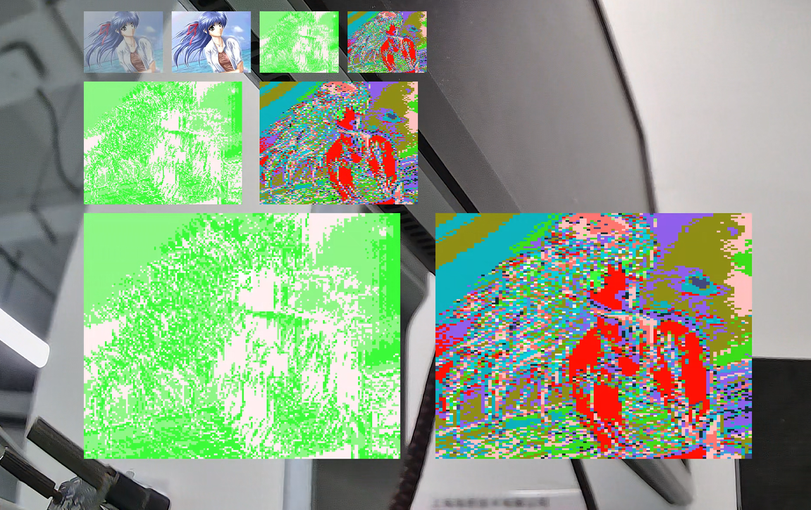
-
操作流程
-
创建 OVERLAY 区域，参考接口 ss_mpi_rgn_create（overlay的像素格式、背景色、大小等属性也在此接口设置）
- 设置 OVERLAY 属性，参考接口 ss_mpi_rgn_attach_to_chn 中的属性 ss_rgn_chn_attr
- 将 OVERLAY 绑定到 VENC chn 上，参考接口 ss_mpi_rgn_attach_to_chn
- 将位图读入内存，参考 sample 中的 region_mst_load_bmp
- 将位图载入 OVERLAY，参考接口ss_mpi_rgn_set_bmp/ss_mpi_rgn_get_canvas_info + ss_mpi_rgn_update_canvas
- 将 OVERLAY 从 VENC chn 上解绑，参考接口 ss_mpi_rgn_detach_from_chn
-
销毁 OVERLAY，参考接口 ss_mpi_rgn_destroy
-
OVERLAY的数据流图如图1所示。

VPSS GRP COVER
- 应用场景：在VPSS GRP的码流上操作，VPSS的一个GRP能够对接多个chn，也就是多个chn能同时出一样的码流，这就是VPSS GRP的一出多。如果希望多个chn上的码流在相同位置增加遮挡效果，可直接在 GRP上叠加 COVER。而无需对每一个chn进行同样的操作。
- 用例功能：在VPSS GRP的码流上叠加一个COVER，实现遮挡效果，如图1所示。

-
操作流程
-
创建 COVER 区域，参考接口 ss_mpi_rgn_create
- 设置 COVER 相关属性（坐标、大小、形状），参考接口 ss_mpi_rgn_attach_to_dev 中的属性 ss_rgn_chn_attr
- 将 COVER 绑定到 VPSS grp 上，参考接口 ss_mpi_rgn_attach_to_dev
- 将 COVER 从 VPSS grp 上解绑，参考接口 ss_mpi_rgn_detach_from_dev
-
销毁 COVER，参考接口 ss_mpi_rgn_destroy
-
GRP COVER数据流图如图2所示。

VPSS CHN COVER
- 应用场景：在VPSS chn的码流上操作，如果VPSS的一个grp只对接一个chn，那么无论在grp上还是在chn的码流上实现遮挡功能，都一样。但是如果是一个grp对接多个chn，而且想分别在每个chn的码流上实现位置、大小不同的遮挡效果，那么只能分别对每个chn进行叠加自定义的COVER。
- 用例功能：在VPSS chn的码流上叠加一个实心COVER，一个空心COVER，效果如图1所示。

-
操作流程
-
创建 COVER 区域，参考接口 ss_mpi_rgn_create
- 设置 COVER 相关属性（坐标、大小、形状），参考接口 ss_mpi_rgn_attach_to_chn 中的属性 ss_rgn_chn_attr
- 将 COVER 绑定到 VPSS chn 上，参考接口 ss_mpi_rgn_attach_to_chn
- 将 COVER 从 VPSS chn 上解绑，参考接口 ss_mpi_rgn_detach_from_chn
-
销毁 COVER，参考接口 ss_mpi_rgn_destroy
-
COVER数据流图如图2所示。

VPSS CHN CORNER_RECT
- 应用场景：在VPSS chn的码流上操作，如果需要在码流上需要专门突出某个目标或某块区域，可以使用角框或线框对其进行标记。例如人脸识别。
- 用例功能：在VPSS chn的码流上叠加一个CORNER_RECT，实现使用角框对画面中某个区域进行标记的效果。如图1所示。

-
操作流程
-
创建 CORNER_RECT 区域，参考接口 ss_mpi_rgn_create
- 设置 CORNER_RECT 相关属性（坐标、大小、形状），参考接口 ss_mpi_rgn_attach_to_chn 中的属性 ss_rgn_chn_attr
- 将 CORNER_RECT 绑定到 VPSS chn 上，参考接口 ss_mpi_rgn_attach_to_chn
- 将 CORNER_RECT 从 VPSS chn 上解绑，参考接口 ss_mpi_rgn_detach_from_chn
-
销毁 CORNER_RECT ，参考接口 ss_mpi_rgn_destroy
-
CORNER_RECT数据流图如图2所示。

VPSS CHN CORNER_RECTEX
- 应用场景：在VPSS chn的码流上操作，如果需要在码流上需要专门突出某个目标或某块区域，可以使用角框或线框对其进行标记，例如人脸识别。
- 用例功能：在VPSS chn的码流上叠加一个CORNER_RECTEX，实现使用角框对画面中某个区域进行标记的效果。如图1所示。

-
操作流程
-
创建 CORNER_RECTEX 区域，参考接口 ss_mpi_rgn_create
- 设置 CORNER_RECTEX 相关属性（坐标、大小、形状），参考接口 ss_mpi_rgn_attach_to_chn 中的属性 ss_rgn_chn_attr
- 将 CORNER_RECTEX 绑定到 VPSS chn 上，参考接口 ss_mpi_rgn_attach_to_chn
- 将 CORNER_RECTEX 从 VPSS chn 上解绑，参考接口 ss_mpi_rgn_detach_from_chn
-
销毁 CORNER_RECTEX ，参考接口 ss_mpi_rgn_destroy
-
CORNER_RECTEX数据流图如图2所示。

VPSS CHN LINEEX
- 应用场景：VPSS chn的码流上操作，在码流上实现画直线段的功能。根据自身需求，能够通过多次画线来实现任意多边形的效果。但线段数量有限制，具体可查看《MPP 媒体处理软件 V6.0 开发参考》“区域管理”章节。
- 用例功能：在VPSS chn的码流上叠加4条长度不同的直线段。效果如图1所示。

-
操作流程
-
创建 LINEEX 区域，参考接口 ss_mpi_rgn_create
- 设置 LINEEX 相关属性（坐标、大小、形状），参考接口 ss_mpi_rgn_attach_to_chn 中的属性 ss_rgn_chn_attr
- 将 LINEEX 绑定到 VPSS chn 上，参考接口 ss_mpi_rgn_attach_to_chn
- 将 LINEEX 从 VPSS chn 上解绑，参考接口 ss_mpi_rgn_detach_from_chn
-
销毁 LINEEX ，参考接口 ss_mpi_rgn_destroy
-
LINEEX数据流图如图2所示。

VENC OVERLAY DRAW LINE
- 应用场景：在VENC的码流上操作，并实现画直线段的功能，而且没有数量的限制。可用在人脸识别数量较多的场景，弥补COVER、CORNER_RECT数量不够用的情况。
- 用例功能：分别创建像素格式为 ARGB1555、ARGB4444、CLUT2、CLUT4、CLUT2_2X2、CLUT4_2X2、CLUT2_4X4、CLUT4_4X4，背景色透明的 OVERLAY 区域，叠加到码流上，在各个 OVERLAY 上画多条直线段。效果如图1所示。

-
操作流程
-
创建 OVERLAY 区域，参考接口 ss_mpi_rgn_create（overlay的像素格式、背景色、大小等属性也在此接口设置）
- 设置 OVERLAY 属性，参考接口 ss_mpi_rgn_attach_to_chn 中的属性 ss_rgn_chn_attr
- 将 OVERLAY 绑定到 VENC chn 上，参考接口 ss_mpi_rgn_attach_to_chn
- 将位图读入内存，参考 sample 中的 region_mst_load_bmp
- 将位图载入 OVERLAY，参考接口 ss_mpi_rgn_set_bmp/ss_mpi_rgn_get_canvas_info + ss_mpi_rgn_update_canvas
- 分别在各个 OVERLAY 上画直线段，参考 sample 中的 sample_region_do_osd_drawline
- 将 OVERLAY 从 VENC chn 上解绑，参考接口 ss_mpi_rgn_detach_from_chn
-
销毁 OVERLAY，参考接口 ss_mpi_rgn_destroy
-
OVERLAY DRAW LINE数据流图图2所示。

scene_auto
详细内容请参考《图像自适应 使用说明》文档。
scene_auto的运行依赖业务进程先创建的媒体通路，所以先运行业务进程。默认与scene_auto搭配运行的sample是vie，在运行之前将vie和scene_auto进行编译，sample_vie，sample_scene，param/sensor_xxx一起放在板上。
-
先运行sample_vie 0并选择一个mode，选择0后如图所示。
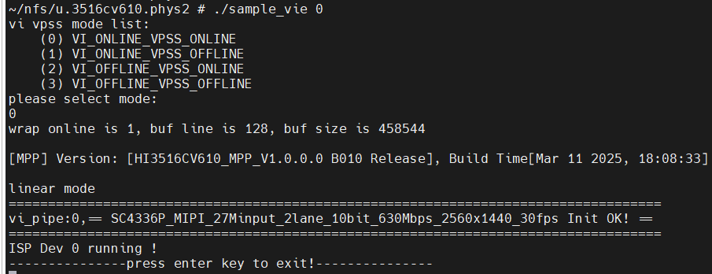
-
用telnet再打开一个命令窗口，运行scene_auto，根据提示先选择1进行初始化并加载ini参数，然后选择videomode index 0或1即可运行，按4可退出。运行过程中可以输入2暂停，输入3重新选择videomode index 0或1后继续运行。
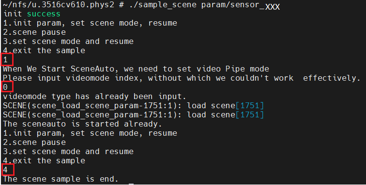
须知：
前面所选择的videomode index 0/1，代表了不同的图像参数，对应于config_cfgaccess_hd.ini中的scene_param_N。
security_subsys
本章节介绍在linux平台中，sample对多个安全模块中的用例演示。
注意：
index为1-11，index为7时会失败，需要在sample_rsa.c文件中，添加公私钥priv_key与pub_key。
-
sample编译
sample_cipher目录 source/mpp/sample/security_subsys/
ko文件夹目录source/out/ko/
-
sample运行描述
-
加载ko示例
-
执行用例
./sample_cipher <index>
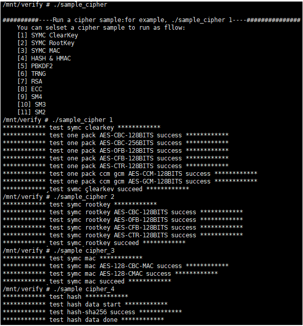
-
用例描述
REE侧与TEE侧都支持，执行用例相关接口详见《安全子系统 API 参考》。
表 1 算法对应列表
aes算法cbc,ofb,cfb,ctr,ccm和gcm模式使用明文key进行加解密运算
aes算法cbc,ofb,cfb,ctr模式使用roottkey进行加解密运算
ECC公私钥对生成，检查点在ECC曲线上，ECDH密钥交换，私钥签名、公钥验证
hash克隆，单包数据计算，多次update，hmac-sm3计算
smart_ae
本章节介绍如何使用目标检测算法，实现智能ae功能。接口文档参考《智能PQ 使用指导》

代码流程
- 启动数据通路
- 启动目标检测算法线程
- 调用hi_mpi_smartae_update_roi_info将检测结果配置到isp中，收敛ae曝光
- 将检测结果配置到region，在最终画面绘制人脸/人形框
数据流图
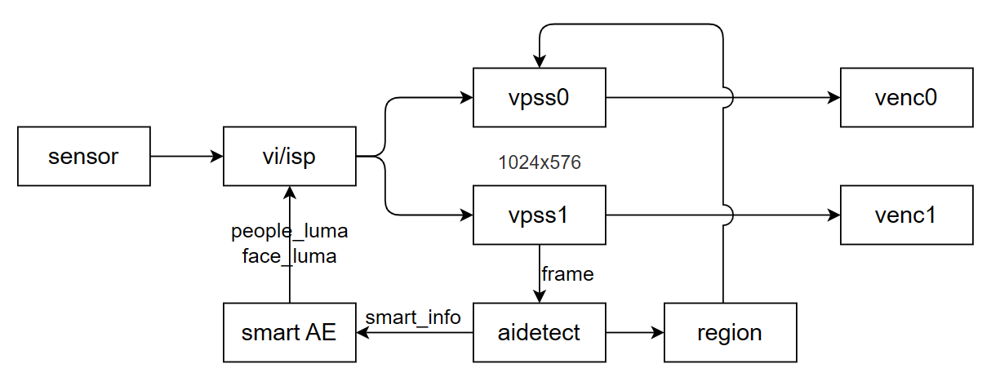
spi_lcd
硬件环境搭建适配参考：
以Hi3516CV610-20S单板为例，lcd屏幕管脚与单板连接管脚对应关系如表1所示。详细的硬件设计指导，请参考《Hi3516CV610 硬件设计用户指南（QFN）》。
表 1 硬件环境搭建适配
-
注意事项
- sample spi_lcd的功能是用spi_lcd屏幕显示输出图像。
- 首先准备好一块spi_lcd屏幕，spi_lcd屏幕按照表1连接。spi_lcd sample不能直接运行，需要手动去编译相应的spi_lcd屏幕驱动，加载屏幕驱动和ot_spi_dma_transfer.ko之后才可验证。
- 灌码流作为输入源时，需要适配软解码ffmpeg，详见sample中readme.txt文件。
-
执行选项
sample使用包含两个选项，一个是sensor输入，一个是灌码流输入。通路获取数据帧后送spi_lcd屏幕显示。
-
数据流程

svp
本章主要介绍SVP的相关Sample，主要包括IVE和SVP_NPU两个模块的示例代码。
IVE
IVE总共提供了9个Sample，主要包含了
-
Canny,<complete>:0, part canny;1,complete canny. (FILE->IVE->FILE)
Canny 操作是一种经典的边缘检测算法，Sample中共提供了两种不同的实现方式，主要区别在于是否包含了完整的Canny步骤。Sample中读取灰度图进行边缘检测，得到运算后的检测结果图并保存为文件，两种Canny边缘提取流程如图1所示。
-
part canny 仅实现了Canny算法的部分步骤，只进行了滤波和梯度计算，省略了极大值抑制和双阈值检测。特点是实现简单，计算速度快，边缘检测效果较差，容易出现噪声或断裂的边缘，适用于对实时性要求高，但对边缘精度要求不高的场景。
核心步骤：
①梯度计算 ss_mpi_ive_mag_and_ang；
②阈值化处理 ss_mpi_ive_threshold_u16。
part canny边缘检测效果如图2所示。
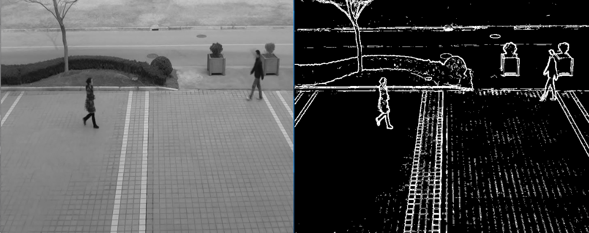
-
complete canny 严格遵循了Canny算法的所有步骤，包括高斯滤波、梯度计算、非极大值抑制、双阈值检测和边缘连接。特点是实现复杂，计算量较大，边缘检测效果较好，能够提取出连续、清晰的边缘。
核心步骤：
① ss_mpi_ive_canny_hys_edge 灰度图的Canny边缘提取的前半部：求梯度、计算梯度幅值幅角、磁滞阈值化及非极大抑制。
② ss_mpi_ive_canny_edge 灰度图的Canny边缘提取的后半部：连接边缘点，形成Canny边缘图。
complete canny边缘检测效果如图3所示。
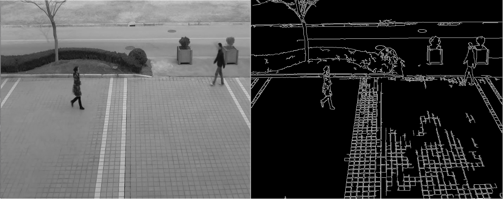
-
-
Gmm2. (FILE->IVE->FILE)
Gmm2背景建模示例。主要演示了如何利用Gmm2实现建模，提取前景。Gmm2建模提取前景流程如图4所示。
-
MemoryTest. (FILE->IVE->FILE)
DMA操作示例。主要演示了如何创建直接内存访问任务。sample流程示例如图7所示。
-
Sobel. (FILE->IVE->FILE)
Sobel示例，主要演示了Sobel的用法，同时演示了mmz_alloc_cache、flush_cache的正确用法。主要流程如图8所示。
-
St Lk. (FILE->IVE->FILE)
ShiTomasi + LK 示例。主要演示了如何利用角点提取及LK跟踪，具体实现流程如图9所示。
-
PerspTrans. (FILE->IVE->FILE)
透视变换示例。主要演示了如何根据输入源图的区域位置和点对信息做相应的透视变换，透视变换流程如下图10所示。
核心API：ss_mpi_ive_persp_trans，详细API接口描述及配置参数可参考《IVE API 参考》。
-
Occlusion detected. (VI->VPSS->IVE->VENC)
检测摄像头是否被遮挡的示例实现，通过检测VI传入的视频帧，识别摄像头是否有遮挡，当检测到遮挡时在控制台打印告警信息，检测流程如图11所示。
核心代码：sample_ive_od_proc，演示了实现遮挡检测的接口调用。
-
Motion detected. (VI->VPSS->IVE->VGS->VENC)
移动侦测示例，移动侦测是通过分析图像或视频序列来检测场景中的运动目标。sample演示了如何利用md实现移动侦测，通过检测VI传入的视频帧，对运动物体进行画框，并编码保存成文件。移动侦测流程如下图12所示。
-
Resize. (FILE->IVE->FILE)
图像大小缩放示例，示例演示了对YUV420SP格式的图像大小镜像缩小并保存输出图像。
核心API：ss_mpi_ive_resize，详细API接口描述及配置参数可参考《IVE API 参考》。
Sample Resize效果如图13所示。


如需根据业务调整以上Sample对应配置的接口参数，请参考《IVE API 参考》进行配置。
SVP_NPU
SVP_NPU共提供了6个sample，主要包括代表性智能模型的示例代码，以及一些NPU主要功能的接口调用流程。
Sample代码中提供了NPU通用智能模型接口的调用流程，接口调用如图1所示。

SVP_NPU Sample的基本调用流程都是一致的，主要包括ACL初始化、模型加载推理和资源释放三个方面。下面对各个Sample的特点进行介绍：
-
svp_acl_resnet50
resnet50模型示例代码，主要演示了NPU加载resnet50模型，并推理单张图片的过程。
应用场景：NPU 分类网模型的加载推理，以及如何处理分类网模型的推理结果。
核心代码：sample_common_svp_npu_output_classification_result，通过获取分类网输出结果，对每种类的分值进行排序，并输出分值最高的前五个分类。
-
svp_acl_resnet50_multi_thread
NPU推理多线程示例代码，在svp_acl_resnet50的基础上，加入了多线程的实现。
核心代码：sample_svp_npu_acl_model_execute_multithread，通过创建多个NPU task, 将任务分发给不同线程，从而达到多线程调用NPU任务的效果。
-
svp_acl_resnet50_dynamic_batch_with_mem_cached
动态batch示例代码，主要演示了如何调用接口动态配置batch，并完成多batch推理。svp_acl_resnet50输入数据为一张单batch图片，该用例在svp_acl_resnet50基础上，通过配置模型batch_size，使模型每次处理图片的数量达到8张。同时，该sample演示了如何配置NPU task是否带cache调用。
核心参数配置：
核心代码：sample_common_svp_npu_set_dynamic_batch， 通过调用svp_acl_mdl_set_dynamic_batch_size接口，配置模型batch_num。batch_num值约束请查看《ATC工具使用指南》中batch_num参数说明。
-
svp_acl_lstm
lstm模型实例代码，主要演示了如何配置lstm模型推理所需的参数。lstm具有两路输入，且lstm模型推理需要额外配置total_t参数(Recurrent网络包含LSTM/RNN/GRU层每一句话的最大帧数)，该sample演示了lstm模型推理的参数配置。
特殊参数配置：
核心代码：svp_acl_mdl_set_total_t，调用ACL接口配置模型所需的total_t参数。
-
svp_acl_preemption
模型抢占示例代码，主要演示了当开启模型抢占时，高优先级的模型推理任务可以打断低优先级的推理任务，从而抢占NPU资源优先执行。该sample中加载的模型为可抢占模型（模型是否可被抢占参考《ATC工具使用指南》“--hwts_preemption_enable”章节）, NPU通过两次加载该模型，并配置其中一个模型的抢占级别更高，进而使高优先级的模型可以抢占低优先级的模型，获取对应NPU资源优先执行。
核心代码：sample_svp_npu_set_model_prior_info，通过配置抢占参数，使分别加载进来的模型拥有不同的抢占优先级，进而在推理任务开始时，优先执行抢占优先级高的模型推理任务
核心参数示例：
-
yolov8 (VI->VPSS->SVP_NPU->VGS->VENC)
yolov8模型示例代码，主要演示了如何全流程跑通VI、VPSS、NPU推理、VGS、VENC，为实际应用场景提供了接口调用的流程示例。整个流程涉及到VI, VPSS, VB, NPU, VGS, VENC, VO多个模块的协同工作，各个模块调用流程如图2所示。
主要流程：
- VI模块进行摄像头传感器流输入。
- 视频流会送入VPSS模块进行图像处理，这里将原始流截取出yuv420P图像，并resize成模型需要用到的图像大小。
- VB模块负责管理缓冲池，接受来自VPSS输出信号。
- NPU不断从VB缓冲池中获取对应帧，创建任务并进行推理。
- VGS模块根据推理结果，在展示帧上进行画框。
- VENC模块将展示帧进行编码。
核心代码：sample_common_svp_npu_start_vi_vpss_venc，示例代码中描述了如何配置vi参数、创建vb、启动vi、绑定vpss、启动vpss、vpss连接vb、启动venc等。

AIComponent
AIComponent总共提供了4个sample，主要包括aidetect和aivsr两大模块的接口调用流程。
本节涉及的相关接口参考《智能视频处理软件 V1.0 开发参考》文档。
aidetect
- 应用场景：主要演示图片输入的aidetect检测模块接口调用流程。
-
代码流程
-
系统初始化，并创建aidetect 通道，详细使用参考接口ss_mpi_aidetect_create_chn
- 设置通道参数和属性，详细使用参考接口ss_mpi_aidetect_get_chn_param，ss_mpi_aidetect_set_chn_param，ss_mpi_aidetect_get_chn_attr，ss_mpi_aidetect_set_chn_attr，参数设置接口按需调用，如果不调用则使用默认配置。
- 读取nv21图片数据，并处理该图片得到对应的检测结果，详细使用参考接口ss_mpi_aidetect_process
- 销毁通道并去初始化系统。
具体操作流程如图1所示。

-
使用说明
-
板端加载对应的ko
-
设置环境变量LD_LIBRARY_PATH
-
运行sample
cd mpp/sample/svp/ai_component/aidetect ./sample_aidetect -i <nv21图片> -m <模型bin文件> -s <width x height> -v (不加-v表示从内存加载模型，加上-v表示从路径加载模型) 例如： ./sample_aidetect -i ./data/hvf_image_hor_1920x1080.yuv -m ../../../../../out/model/aidetect/det_hvf_hor.bin -s 1920x1080 ./sample_aidetect -i ./data/hvf_image_ver_1080x1920.yuv -m ../../../../../out/model/aidetect/det_hvf_ver.bin -s 1080x1920 -v运行截图如下图所示（以det_hvf_hor.bin作为输入模型为例）
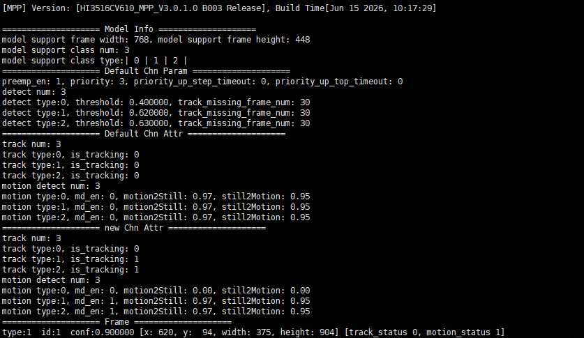
模型文件在<SDK_PATH>/smp/a7_linux/source/out/model/aidetect目录下，测试的输入图片在sample/svp/ai_component/aidetect/data目录下，内存资源紧张时，推荐使用路径传入的方式。
运行sample命令参数说明：
-i: 指定测试图片路径
-s: 指定测试图片的分辨率，用x分割，比如1920x1080
-m: 指定测试的模型文件路径
-v: 指定创建通道时的模型加载方式是路径传入还是内存传入，默认为内存传入
-h: 显示帮助信息
aidetect_vie
- 应用场景：主要演示媒体通路下的aidetect检测模块接口调用流程。
-
代码流程
-
启动数据流通路，从前向后分别启动各媒体模块VI，VPSS，VENC
- 创建aidetect通道并创建一个线程，参考接口ss_mpi_aidetect_create_chn
- 线程中从vpss获取数据帧，然后送给aidetect处理，将aidetect输出的检测框画在当前帧上，然后将画框后的帧送给venc，最后释放该帧，参考接口ss_mpi_vpss_get_chn_frame、ss_mpi_aidetect_process、ss_mpi_venc_send_frame、ss_mpi_vpss_release_chn_frame。
- 停止业务时，先结束线程并销毁创建的通道，然后销毁各媒体模块，参考接口ss_mpi_aidetect_destroy_chn。
具体操作流程如图1所示。

-
使用说明
-
板端加载对应的ko
-
设置环境变量LD_LIBRARY_PATH
-
运行sample
cd mpp/sample/svp/ai_component/aidetect_vie ./sample_aidetect_vie <模型bin文件> 例如： ./sample_aidetect_vie det_hvf_hor.bin运行截图如下图所示（以det_hvf_hor.bin作为输入模型为例），运行后在mpp/sample/svp/ai_component/aidetect_vie目录会生成stream_chn0.h265和stream_chn1.h265视频文件
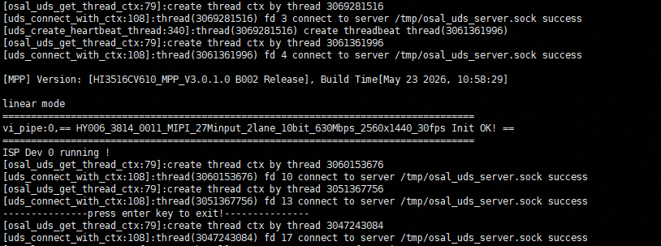
模型文件在<SDK_PATH>/smp/a7_linux/source/out/model/aidetect目录下
运行sample命令参数说明：
-h: 显示帮助信息
aivsr
- 应用场景：主要演示aivsr三种识别（车牌识别，人脸抓拍，人脸识别）任务的接口调用流程。
-
代码流程
-
创建aidetect通道，参考接口ss_mpi_aidetect_create_chn
- 创建aivsr通道，参考接口ss_mpi_aivsr_create_chn
- 设置通道参数，参考接口ss_mpi_aivsr_set_chn_param，参数设置接口按需调用，如果不调用则使用默认配置
- 读取NV21图片，使用aidetect检测图片中的目标，然后将检测结果输入aivsr处理，参考接口ss_mpi_aidetect_process和ss_mpi_aivsr_process
- 销毁aivsr通道和aidetect通道，参考接口ss_mpi_aidetect_destroy_chn和ss_mpi_aivsr_destroy_chn
具体操作流程如图1所示。

-
sample用例介绍
-
车牌识别
应用场景：用于识别车辆上的车牌号码
操作流程：如图1，任务类型设置为OT_AIVSR_TASK_VLPR，相关的数据结构为ot_vlpr_attr，ot_vlpr_param和ot_vlpr_result_array。
-
人脸抓拍
应用场景：用于抓拍满足一定要求的人脸
操作流程：如图1，任务类型设置为OT_AIVSR_TASK_FACE_CAPTURE，相关的数据结构为ot_face_capture_attr，ot_face_capture_param和ot_face_capture_result_array
-
人脸底库特征提取
应用场景：用于提取底库人脸的特征
操作流程：如图1，任务类型设置为OT_AIVSR_TASK_FR, 相关的数据类型为ot_fr_result_array
-
人脸特征比对
应用场景：用于人脸特征与底库对比
操作流程：如图1，任务类型设置为OT_AIVSR_TASK_FR, 相关的数据类型为ot_fr_result_array
-
使用说明
-
板端加载对应的ko
-
设置环境变量LD_LIBRARY_PATH
-
运行sample
cd mpp/sample/svp/ai_component/aivsr ./sample_aivsr -c <用例index> -p <NV21图片路径> -s <宽x高> -v(不加-v表示从内存加载模型，加上-v表示从路径加载模型) 例如： ./sample_aivsr -c 0 -p /xxx/xxx.yuv -s 1920x1080 ./sample_aivsr -c 1 -p /xxx/xxx.yuv -s 1920x1080 ./sample_aivsr -c 2 -p /xxx/xxx.yuv -s 1920x1080 -n name -o ./name.txt ./sample_aivsr -c 3 -p /xxx/xxx.yuv -s 1920x1080 -d ./database运行成功截图如下图所示（以用例0为例）
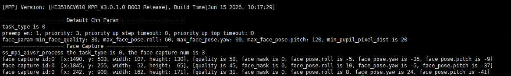
模型文件在<SDK_PATH>/smp/a7_linux/source/out/model/aivsr目录下；内存资源紧张时，推荐使用路径传入的方式；人脸识别场景需要将生成的底库文件放在同一个目录下再执行人脸特征与底库比对。
运行sample命令参数说明：
-c：指定运行的sample用例
0：人脸抓拍(face_capture)
1：车牌识别(vlpr)，
2：人脸底库特征提取(fr)
3：人脸特征与底库比对(fr)
-v：指定创建通道是通过传入路径还是内存，默认为内存传入
-p：输入图片路径，输入图片需为nv21格式的yuv图片
-s：输入图片分辨率，宽x高
-n：输入底库图片名称或id
-o：底库图片特征信息的输出文件路径
-d：输入底库特征信息文件的文件夹路径，支持路径下有多个底库特征文件
-h：显示帮助信息
aivsr_vie
- 应用场景：主要演示车牌识别任务的异步调用流程。
-
代码流程
-
启动数据流通路，从前向后分别启动各媒体模块VI，VPSS，VENC
- 创建aidetect通道，创建aivsr通道，并注册结果回调函数，参考接口ss_mpi_aidetect_create_chn，ss_mpi_aivsr_create_chn，ss_mpi_aivsr_register_result_callback
- 创建一个线程用于处理帧数据
- 线程中从vpss获取数据帧，送给aidetect处理，再送给aivsr异步接口处理，最后释放该帧，参考接口ss_mpi_vpss_get_chn_frame、ss_mpi_aidetect_process、ss_mpi_aivsr_async_process、ss_mpi_vpss_release_chn_frame
- 停止业务时，先结束线程，然后注销回调函数，销毁aivsr通道，销毁aidetect通道，然后销毁各媒体模块，参考接口ss_mpi_aidetect_destroy_chn、ss_mpi_aivsr_unregister_result_callback、ss_mpi_aivsr_destroy_chn
具体操作流程如图1所示。

-
使用说明
-
板端加载对应的ko
-
设置环境变量LD_LIBRARY_PATH
-
运行sample
cd mpp/sample/svp/ai_component/aivsr_vie ./sample_aivsr_vie <aidetect模型bin文件> <车牌识别模型bin文件> 例如： ./sample_aivsr_vie det_hvf_hor.bin vsr_vlpr_lite.bin运行截图如下图所示（以det_hvf_hor.bin和vsr_vlpr_lite.bin作为输入模型为例），运行后在mpp/sample/svp/ai_component/aivsr_vie目录会生成stream_chn0.h265和stream_chn1.h265视频文件
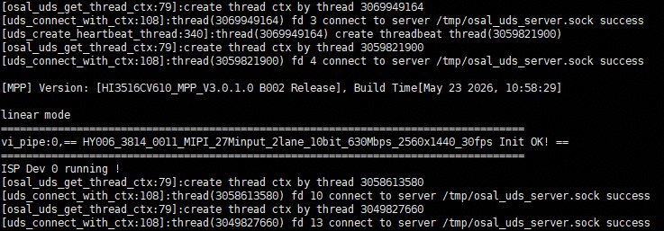
模型文件在<SDK_PATH>/smp/a7_linux/source/out/model/aivsr目录下；vsr_vlpr.bin在256MB以上平台上运行，vsr_vlpr_lite.bin在128MB以上平台上运行。
运行sample命令参数说明：
-h：显示帮助信息
svc_venc
本章节主要介绍智能编码sample，包含两种送框形式。
- 智能检测Mask 分割图
- 智能检测矩形窗
智能编码sample的智能分析部分使用了svp模块中的yolov8推理模型。

- sample_svp_npu_acl_e2e_yolo：配置vi参数、创建vb、启动vi、绑定vpss、启动vpss、vpss连接vb、启动svp智能分析、启动venc。
- sample_svp_npu_acl_to_venc：将智能检测的mask或者rect送入编码，可参考《MPP 媒体处理软件 V6.0 开发参考》中关于ss_mpi_venc_send_svc_region、ss_mpi_venc_send_svc_mask、ss_mpi_venc_set_svc_param_ex 的接口描述。
- compile sample code
-
设置环境变量LD_LIBRARY_PATH
-
run sample
uvc
uvc有两个sample，分别为host_uvc和uvc_app。
- 板端做USB HOST的host_uvc，不使用图像sensor，从外接的UVC摄像头中拉取视频流；
-
板端做外设的uvc_app，从sensor采集图像，经过VI、VPSS、(VENC)、UVC、内核驱动的处理向HOST发送视频流。
host_uvc
host_uvc在板端做USB HOST时，从外接UVC摄像头中读取YUV/编码数据流，并保存为文件，其中不涉及MPP媒体接口。
- host_uvc代码按V4L2标准打开/dev/videoX设备后，通过ioctl方式查询设备能力、添加buffer、设置媒体格式和分辨率等操作，循环读取视频流数据后存为文件。由于不依赖第三方库，用户也可以移植开源代码来实现同样功能。
- host_uvc.c中sample_uvc_video_save_image()拿到内核返回的帧缓冲buffer后，立即进行保存文件操作，可在此处进行修改，禁用存文件功能，对接其他业务。
-
先将USB子系统切换为HOST主机模式：
-
接上外部UVC摄像头，用下面命令查看其支持的格式和分辨率：
-
根据支持的格式和分辨率，拉取视频流并保存文件，参考下列命令：
./sample_host_uvc /dev/video0 -fMJPEG -s1920x1080 -Fstream_1920x1080.mjpg ./sample_host_uvc /dev/video0 -fH264 -s1920x1080 -Fstream_1920x1080.h264 ./sample_host_uvc /dev/video0 -fH265 -s1920x1080 -Fstream_1920x1080.h265 ./sample_host_uvc /dev/video0 -fYUYV -s1920x1080 -Fraw_1920x1080.yuyv ./sample_host_uvc /dev/video0 -fNV21 -s1920x1080 -Fraw_1920x1080.nv21 ./sample_host_uvc /dev/video0 -fNV12 -s1920x1080 -Fraw_1920x1080.nv12注意：保证当前目录的可用空间足够大。
-
将上述操作生成的YUV或码流文件权限改为0666，然后复制到电脑上，用PotPlayer、VLC、YUV Player等工具查看图像是否正常。
下面常见问题的处理方法详细参考代码目录sample/host_uvc/readme.txt.
- sample可能会因系统内存不足被杀掉，可以通过增大OS内存和减小MMZ内存来解决；
- 板子内核默认不支持NV21，需要修改两处地方，并重新编译烧写内核；
-
拉取YUV数据流时，如果CPU占用率较高，可以在third_party/linux/linux-5.10.y/drivers/media/usb/uvc/uvc_video.c文件的前面添加如下一行，确保USB驱动分配使用的内存带Cache属性，然后编译烧写内核。
uvc_app
uvc_app用于将板端做为USB摄像头设备，实现UVC gadget功能，通过编译开关兼包含UAC功能。目前UVC支持YUYV、NV12、NV21、MJPEG、H264、H265格式。在接有两个图像sensor的情况下，也可以支持双路UVC设备。
代码简介
基于V4L2框架，uvc_app可以编译出两个sample程序。
- sampel_uvc_v4l2支持传统的纯V4L2方案，即通过VIDEO_IOCTL_DQUEUE_BUF/VIDEO_IOCTL_QUEUE_BUF两个ioctl系统调用将视频流数据复制给内核并发送给USB HOST，此种方式需要复制一次，效率不高。
- sample_uvc对视频流的发送方式进行了定制优化，基于新增的ot_uvc.ko和mpi_uvc_xxx接口支持三类送视频数据输入模式：零拷贝绑定、用户态零拷贝送stream/frame、用户态拷贝自有数据流。
两个程序在V4L2控制方面的实现是相同的，主要差异在于发送视频数据的方式。另外V4L2程序单路场景可支持still image抓图功能。
Sample用例介绍
由于芯片有多种型号，对应不同的loadko脚本，以Hi3516CV610-20S debug为例，对应使用的脚本为ko/load3516cv610/load3516cv610_20s_debug，其他型号视具体情况调整。
-
准备脚本
UVC sample运行前需要先跑Config脚本，将格式分辨率等信息通过configfs传给内核驱动层。
- 先从《外围设备驱动 操作指南》的“录像机”小节中复制脚本保存为ConfigUVC.sh
- 然后从“内核下录像机操作示例”小节步骤2中复制环境变量配置脚本，保存为runUVC.sh，并按要求修改VID、PID、MANUFACTURER、PRODUCT，默认配置为单路、ISOC、零拷贝sample_uvc。
-
配置运行环境
将ConfigUVC.sh, runUVC.sh，编译好的sample_uvc, sample_uvc_v4l2，ko目录一起放在板端。对于128MB内存的板子，建议配置OS和MMZ各占64MB。其他内存大小根据情况调整两者占比，如果内存不足，可以在runUVC.sh裁剪大分辨率，并在uvc_media*.c中修改vb_cfg，减少MMZ内存占用，然后重新编译sample。
-
关于配置OS和MMZ内存。修改OS内存要进入uboot命令行，修改bootargs mem变量后用sa保存
-
然后编辑ko/load3516cv610/load3516cv610_20s_debug，修改mmz_start和mmz_size
-
打开UVC KO（纯V4L2 sample不用），编辑ko/load3516cv610/load3516cv610_20s_debug，去掉insmod ot_uvc.ko和rmmod ot_uvc前面的#号。
-
-
运行sample
-
板子启动后USB默认为device模式，如果之前跑过sample_host_uvc host模式，需要显式切换USB device模式：
-
然后运行runUVC.sh即可跑起来，runUVC.sh中已经调用了ConfigUVC.sh和loadko脚本及sample。
用USB线连接电脑，打开PotPlayer，通过F5打开配置界面，选择设备、格式分辨率，确定后按Ctrl+J可播放摄像头画面。
播放过程中按TAB键可以显示当前格式分辨率及解码信息，再按TAB则隐藏。播放H264/H265格式时可以点PotPlayer下边栏的S/W或H/W来切换软硬解码器。
-
图 1 sample_uvc 单路绑定模式NV12/NV21


图 3 sample_uvc 单路绑定模式MJPEG/H264/H265

Sample高级用例
Sample用例介绍章节介绍了默认的sample运行步骤，通过修改脚本、内核或特定的操作步骤，可以打开高级功能，以下为高级功能场景的操作方法。
-
UVC协议版本1.1/1.5
编辑runUVC.sh，找到export BCDUVC一行，将内容修改为0x0150即为UVC1.5, 修改为0x0110即为UVC1.1。重启运行runUVC.sh。
-
USB传输模式
编辑runUVC.sh，找到export TransferMode一行，将内容修改为bulk即USB bulk传输模式，修改为isoc即为USB isoc传输模式。重启运行runUVC.sh。
-
选择零拷贝或纯V4L2 sample
编辑runUVC.sh，找到 export PerfMode一行，修改内容为v4l2，去掉前面的#注释符，将会运行sample_uvc_v4l2，如果用#注释掉这一行，将会运行sample_uvc。重启运行runUVC.sh。
-
双路UVC设备
双路UVC需要用MIPI一拖二排线接入两个图像sensor。
内核默认只支持单路，双路场景需要重新配置内核，参考《外围设备驱动 操作指南》“内核下录像机操作示例”章节，关闭UVC Still Image并使能USB Gadget Webcam without status interrupt endpoint，然后重新编译烧写内核。
编辑runUVC.sh，找到 export UVC_DEVICE_CNT一行，将其值修改为2，最后检查load3516cv6**_XXX脚本里-sensor0 -sensor1都指定了正确的sensor类型。重启运行runUVC.sh，可以看到两个UVC摄像头"UVC Camrea 1"和"UVC Camera 2"，用两个播放器实例分别打开UVC Camera N进行播放。
sample_uvc和sample_uvc_v4l2都支持双路设备。
-
零拷贝sample数据输入模式
不同于sample_uvc_v4l2使用ioctl系统调用将缓冲区从用户态送进内核驱动，零拷贝的sample_uvc通过ot_uvc.ko和UVC mpi接口，使用了定制的视频流传输通道，目前支持三类方式，可以通过命令行参数进行修改。
- DEVICE_COUNT：UVC设备数量（设备号对应UVC通道号），跟ConfigUVC.sh用到的${UVC_DEVICE_CNT}要保持一致。
-
DATA_MODE：UVC视频流数据输入模式，现在支持0-2三种选择：
- 0：UVC_MPP_BIND_UVC 绑定模式，VPSS或VENC可以与UVC绑定，内核态零拷贝绑定直传视频数据；
- 1：UVC_SEND_YUV_FRAME/UVC_SEND_VENC_STREAM，用户态从VPSS/VENC拿到的frame/stream以零拷贝方式用mpi_uvc_send_frame/mpi_uvc_send_stream接口中送UVC驱动；该模式可以在把视频数据发送给UVC接口之前，将视频数据进行网络传输或存储；
- 2：UVC_SEND_USER_STREAM对于编码码流，可以从用户指定的任意有效地址上拷贝码流，便于定制添加私有数据。在sample里YUV格式仍采用绑定方式，虽然可以用mpi_uvc_send_user_stream传送YUV数据，由于拷贝方式效率较低所以不推荐。
如果要修改数据输入模式，需要修改sample_uvc的第2个命令行参数为0、1、2之一即可，然后重启运行runUVC.sh。
图 7 sample_uvc 单路SEND_YUV_FRAME模式 NV12/NV21

图 8 sample_uvc 单路SEND_YUV_FRAME模式 YUYV

-
Still Image抓图
目前仅V4L2 sample的单路场景支持抓图。
内核默认不支持Still Image，需要重新配置内核，参考《外围设备驱动 操作指南》“内核下录像机操作示例”章节，打开UVC Still Image并禁用USB Gadget Webcam without status interrupt endpoint，然后重新编译烧写内核。
-
编辑runUVC.sh, 配置export UVC_DEVICE_CNT=1, 打开（去掉#号）并配置export PerfMode="v4l2"，export StillCaptureMethod=2。然后重启运行runUVC.sh。
使用最新的amcap播放器，选择UVC Camera 1设备，打开预览画面。
-
点击amcap菜单栏Photo，Set Photo Format， 在Type Setting子窗口中选择MJPG或YUYV, 在Size Setting中选择一个分辨率，点击“Apply”后，再点击右下角“Photo”按钮，会弹出一个新窗口显示所抓图片。
图 11 sample_uvc_v4l2 单路Still Image，预览YUYV 抓YUYV

图 12 sample_uvc_v4l2 单路Still Image，预览YUYV 抓MJPEG

-
-
PU/CT控制
PotPlayer播放过程中按F5打开参数选项窗口，选择设备->摄像头，在视频录制设备里选择UVC Camera N，点击右边"..."按钮，弹出PU/CT控制窗口，此处可对亮度等属性进行调整，详细参考《UVC+UAC解决方案应用指导》。
-
UAC设备
ConfigUVC.sh中UAC默认是关闭的，若要启用，将脚本中uac有关的三行命令开头#号注释去掉。
假如同时使用Still Image抓图功能，注意runUVC.sh中StillCaptureMethod只能为2。
uvc_app编译时默认关闭UAC，要打开UAC功能，将Makefile.perf和Makefile.v4l2中的UAC_COMPILE都打开设置为y，按照代码目录的sample/uvc_app/alsa_readme.txt先编译ALSA库，再重新make clean; make编译sample，最后将sample程序、ALSA库，ALSA配置文件按ALSA要求复制到板子上。
一切准备就绪后，跑runUVC.sh，即可在电脑上看到UAC设备，详细参考《UVC+UAC解决方案应用指导》。


venc
受限于不同单板的内存或者规格差异，部分用例在Hi3516CV610-10B或Hi3516CV608不能运行（如 sample_venc 6/7/8/9/10），需要裁剪VB个数或者使用其他手段降低内存占用才可正常运行。
sample_venc_normal
-
场景介绍
演示从VI-VPSS-VENC通路的一般配置流程。
-
数据流
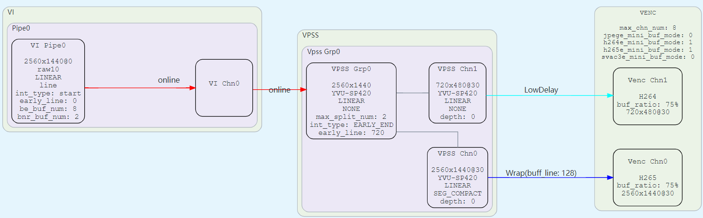
-
代码流程
-
初始化VENC前级模块（VI-VPSS）并进行绑定
- 获取用户配置（GOP结构、RC模式）
- 创建编码器，和VPSS进行绑定
- 启动收流。
sample_venc_intra_refresh
-
场景介绍
演示P帧内刷新的使用方法。P帧帧内刷新，可以为客户提供码率非常平滑的编码方式，每个I帧和P帧的大小可以非常接近。在网络带宽有限（如无线网络）的情况下，降低I帧过大带来的网络冲击，降低网传延时。
P帧帧内刷新的的介绍和接口使用请参考《MPP 媒体处理软件 V6.0 开发参考》第6章“P帧帧内刷新”小节。
-
数据流
同sample_venc_normal
-
初始化VENC前级模块（VI-VPSS）并进行绑定
- 获取用户配置（GOP结构、帧内刷新模式、RC模式）
- 创建编码器，和VPSS进行绑定，设置帧内刷新模式。
- 启动收流。
sample_venc_roi_bg
-
场景介绍
演示背景帧低帧率的配置方法。背景帧低帧率适用于背景区域相对固定的场景，该功能与ROI接口配合，通过降低背景区域的刷新率，降低编码码率。
背景帧低帧率的配置方法和注意事项请参考《MPP 媒体处理软件 V6.0 开发参考》第6章“非ROI区域的低帧率编码”小节。
-
数据流
同sample_venc_normal
- 初始化VENC前级模块（VI-VPSS）并进行绑定
- 获取用户配置（GOP结构、RC模式）
- 创建编码器，和VPSS进行绑定，设置ROI属性、背景帧低帧率属性。
- 启动收流。
sample_venc_qpmap
-
场景介绍
演示QPMAP功能的使用。QPMAP 模式下允许用户自由决定码控的策略。
QPMAP的功能介绍以及使用注意事项请参考《MPP 媒体处理软件 V6.0 开发参考》第6章“码率控制”小节。
-
数据流
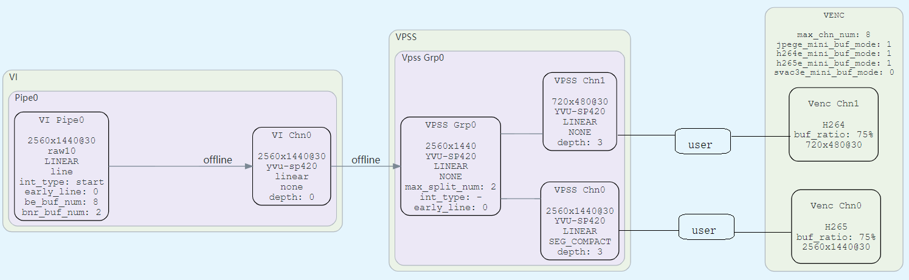
- 初始化VENC前级模块（VI-VPSS）并进行绑定
- 获取用户配置（GOP结构）
- 创建编码器。
-
从vpss通道获取视频帧，填充qpmap信息后送给编码通道编码。
- 带有QPMAP信息送帧，需要使用ss_mpi_venc_send_frame_ex接口。
- QPMAP内存信息填充示例参考函数sample_comm_venc_vir_addr_temp。
-
启动收流。
sample_venc_debreath_effect
-
场景介绍
演示去呼吸功能的配置。去呼吸功能可以减少编码后码流的呼吸效应。
去呼吸功能的配置以及使用注意事项请参考《MPP 媒体处理软件 V6.0 开发参考》第6章 ss_mpi_venc_set_debreath_effect接口。
-
数据流
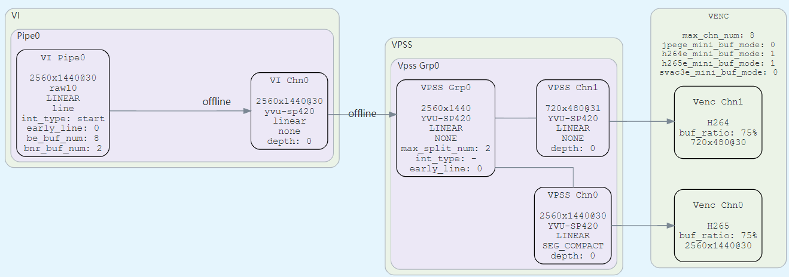
- 初始化VENC前级模块（VI-VPSS）并进行绑定
- 获取用户配置（GOP结构、RC模式）
- 创建编码器，和VPSS进行绑定，设置通道0去呼吸。
- 启动收流。
sample_venc_mosaic_map
-
场景介绍
演示马赛克功能使用。逻辑根据马赛克表和马赛克配置将原始yuv直接改写，再进行编码，那么输出的码流就会带有马赛克的效果。
-
数据流
同sample_venc_qpmap
- 初始化VENC前级模块（VI-VPSS）并进行绑定
- 获取用户配置（GOP结构，RC模式）
- 创建编码器。
-
从vpss通道获取视频帧，填充mosaic信息后送给编码通道编码。
- 带有QPMAP信息送帧，需要使用ss_mpi_venc_send_frame_ex接口。
- 马赛克信息填充示例参考函数sample_comm_venc_mosaic_map_send_frame_proc。
-
启动收流。
sample_venc_single_sp
-
场景介绍
延时GOP结构SINGLE_SP的配置方式。
SINGLE_SP的功能介绍和注意事项请参考《MPP 媒体处理软件 V6.0 开发参考》第6章“GOP 结构”小节。
-
数据流
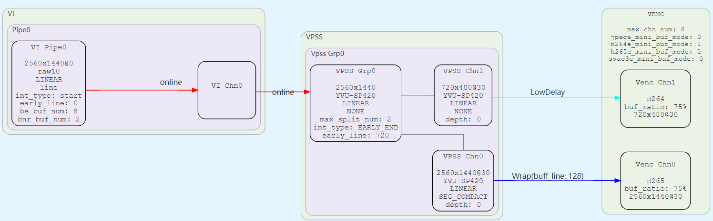
- 初始化VENC前级模块（VI-VPSS）并进行绑定
- 获取用户配置（RC模式）
- 创建编码器（GOP模式为singlesp，设置跳帧参考参数（base, enhance, pred_en）=（1, 3, TRUE）），和VPSS进行绑定。
- 启动收流。
sample_venc_mjpeg_roi_set
-
场景介绍
演示mjpeg ROI 的配置方法。
功能介绍和使用注意事项参考《MPP 媒体处理软件 V6.0 开发参考》第6章 ss_mpi_venc_set_jpeg_roi_attr接口。
-
数据流
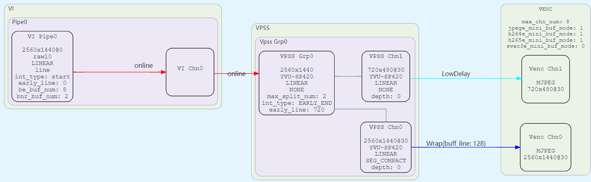
- 初始化VENC前级模块（VI-VPSS）并进行绑定
- 获取用户配置（RC模式）
- 创建编码器，设置mjpeg roi属性，和VPSS进行绑定。
- 启动收流。
sample_venc_svac3
-
场景介绍
演示SVAC3.0的配置方法。配置方式和H.264、H.265协议基本相同。
-
数据流
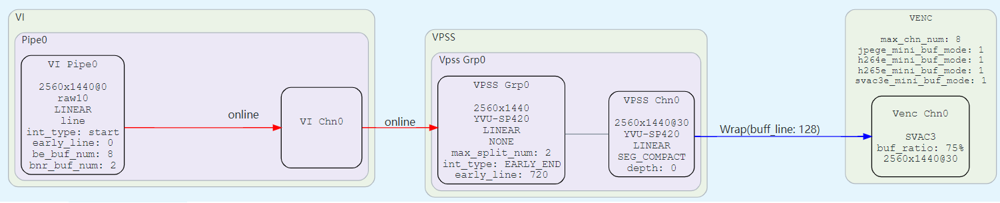
- 初始化VENC前级模块（VI-VPSS）并进行绑定
- 获取用户配置（GOP结构、RC模式）
- 创建编码器(SVAC3协议)，和VPSS进行绑定
- 启动收流。
sample_venc_inner_scale
-
场景介绍
演示VENC内部缩放功能的配置和使用。内部缩放功能在编码大码流时缩放输出小yuv给小码流进行编码，由于大小码流之间只有一个VB交互，因此相比小码流前级送帧，可以节省VB个数。
功能介绍和使用注意事项请参考《MPP 媒体处理软件 V6.0 开发参考》第6章“内部缩放”小节。
-
数据流
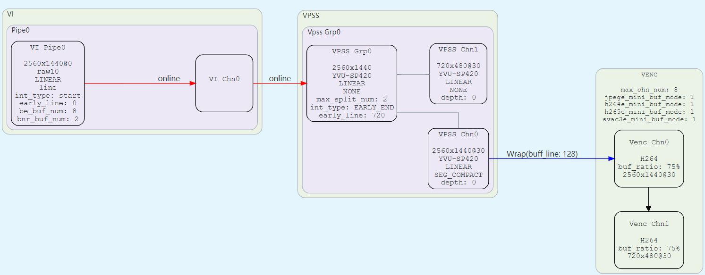
- 初始化VENC前级模块（VI-VPSS）并进行绑定
- 获取用户配置（协议、GOP结构、RC模式）
- 创建编码器，VPSS chn0(发送方)绑定给VENC chn0(接收方)， VENC chn0（发送方）绑定给VENC chn1（接收方）
- 启动收流。
sample_venc_mjpeg_roimap
-
场景介绍
演示JPEG ROI map的配置方式。
ROI表的配置说明请参考《MPP 媒体处理软件 V6.0 开发参考》第6章 ot_venc_user_roimap。
-
数据流
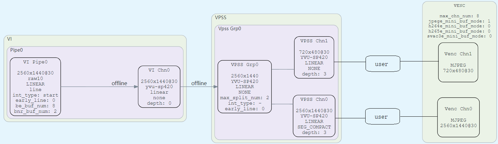
- 初始化VENC前级模块（VI-VPSS）并进行绑定
- 获取用户配置（RC模式）
- 创建编码器。
-
从vpss通道获取视频帧，填充ROI map信息后送给编码通道编码。
带有ROI map信息送帧，需要使用ss_mpi_venc_send_frame_ex接口。
-
启动收流。
sample_venc_composite
-
场景介绍
演示复合编码的配置方法。
复合编码功能介绍和具体使用方法参考《MPP 媒体处理软件 V6.0 开发参考》第6章“复合编码”小节。
-
数据流
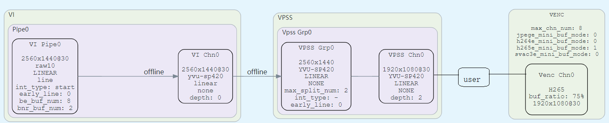
- 初始化VENC前级模块（VI-VPSS）并进行绑定
- 获取用户配置（GOP结构，RC模式）
-
设置通道config（composite_enc_en，mosaic_en，quality_level），创建编码器。
通道配置请参考《MPP 媒体处理软件 V6.0 开发参考》第6章 ss_mpi_venc_set_chn_config接口。
-
从vpss通道获取视频帧，填充mosaic信息后调用ss_mpi_venc_send_multi_frame接口送编码通道编码。
复合编码送帧需要使用接口ss_mpi_venc_send_multi_frame
-
启动收流。
vgs
本章节介绍如何使用VGS模块在帧上进行缩放、COVER、CORNER_RECT、LINE、ROTATE、LUMA_SUM功能。
代码流程
- 初始化sys和common vb，打开文件
- 读取文件内容，获取buffer配置和VB块
- ss_mpi_vgs_begin_job 启动（创建）job
- ss_mpi_vgs_add_xx_task 添加1个或多个任务
- ss_mpi_vgs_end_job 提交job
- sample_vgs_save_sp42_x_to_planar 保存帧到文件
- 释放sys和vb资源退出

sample用例介绍
SCALE
-
应用场景：对图像进行缩放操作。
- 对图像进行缩小，作为画中画的小图。
- 降低图像分辨率减少内存占用。
-
用例功能：将1920x1080分辨率图像缩小到1280x720分辨率，如下方效果示例图所示
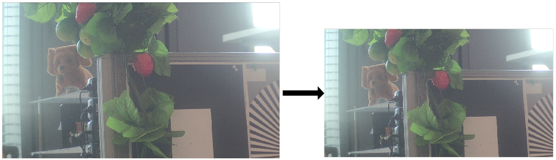
-
操作流程：
- 参考代码流程，在步骤4中添加任务时用ss_mpi_vgs_add_scale_task，重点是在ot_vgs_task_attr vgs任务属性结构体中对输入图像img_in和输出图像img_out的分辨率进行配置，img_in和img_out是缩放时的关键参数。
- 需要注意：输入输出帧是否在同一buffer需由使用者判断，本scale sample中默认输入输出不在同一buffer。
COVER & CORNER_RECT
-
应用场景：在图像中打COVER 或 CORNER_RECT。
- 对图像的某块区域进行遮挡时，向该区域叠加纯色块。
- 重点突出画面中的区域和某个目标（例如人脸，宠物等）时，可以使用空心矩形框（实线框）或角框圈出来。
-
用例功能：在图像上叠加显示1个绿色实心矩形，5个粉色角框，如下图所示
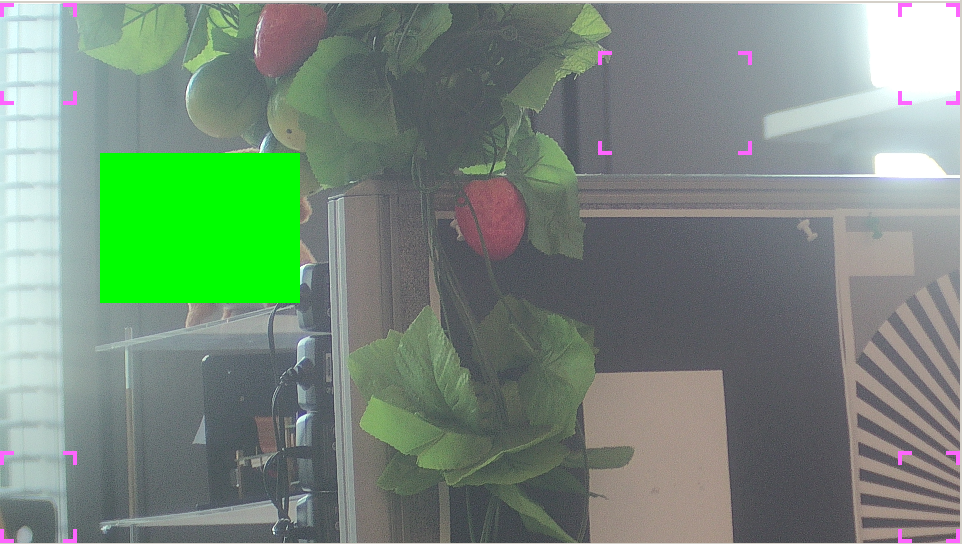
-
操作流程
- 参考代码流程，在步骤4中使用sample_vgs_add_case2_task添加ss_mpi_vgs_add_cover_task和ss_mpi_vgs_add_corner_rect_task。
- 在ss_mpi_vgs_add_cover_task任务中，重点是对第3个参数ot_cover结构体数组指针和第4个参数array_size进行配置，ot_cover中包括cover type(矩形/任意四边形)和对应属性、颜色，array_size为cover数目。
- 在ss_mpi_vgs_add_corner_rect_task任务中，重点是第3个参数ot_corner_rect、第4个参数ot_corner_rect_attr、第5个参数array_size同样为corner_rect数目。ot_corner_rect包括区域和水平/垂直线长以及线宽，ot_corner_rect_attr包括角框类型(角框/实线框)和颜色。
- 在非压缩场景中，输入输出图像必须在同一buffer内。
LINE
- 应用场景：在图像上叠加显示多条宽度/颜色不同的直线，根据自身需求，能够通过多次画线实现任意多边形、虚线的效果。
-
用例功能：在图像上叠加显示1条蓝色倾斜直线，效果如图所示
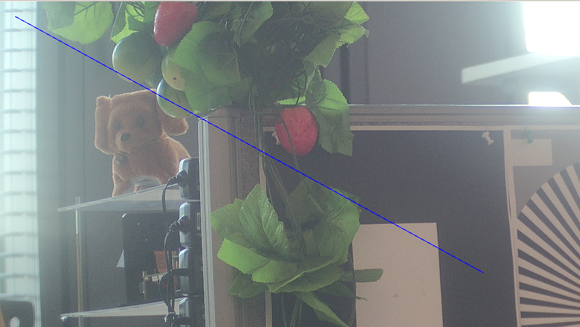
-
操作流程
- 参考代码流程，在步骤4中添加任务时使用ss_mpi_vgs_add_draw_line_task。
- 在ss_mpi_vgs_add_draw_line_task任务中，重点是对第3个参数ot_vgs_line和第4个参数array_size线条个数，其中ot_vgs_line中包括线段起始点和终点，以及它们的厚度和颜色。
- 在非压缩场景中，输入输出图像必须在同一buffer内。
ROTATE
- 应用场景：对图像进行旋转操作，用于用户对操作界面进行旋转或设备旋转安装时的场景。
-
用例功能：对图像旋转90度，效果如图所示。
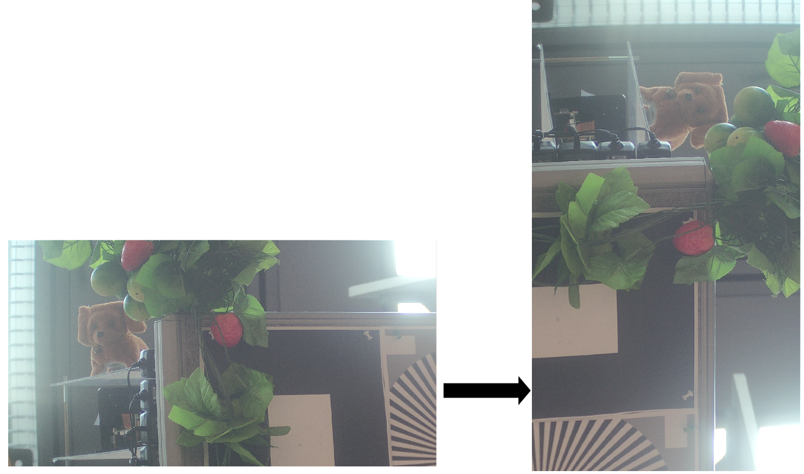
-
操作流程
- 参考代码流程，在步骤4中添加任务时使用ss_mpi_vgs_add_rotation_task。
- 在ss_mpi_vgs_add_rotation_task任务中，重点是第3个参数旋转角度，配置需要的旋转角度即可。
- 当旋转90度或270度时，输入输出必须为不同buffer。
LUMA_SUM
- 应用场景：计算图像指定区域亮度和，用于osd反色控制
-
用例功能：计算图像指定4个40x40区域亮度和，输入图像和区域参数，得到结果如下
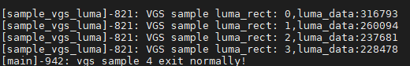
-
操作流程
- 参考代码流程，在步骤4中添加任务时使用ss_mpi_vgs_add_luma_task。
- 在ss_mpi_vgs_add_luma_task任务中，第3个参数配置需要计算亮度和的区域数组指针，第4个参数是亮度和区域数目，第5个参数是存储亮度和的数组指针
- 亮度和任务仅检查输入帧的合法性。
vie
VIE sample主要展示VI-VPSS-VENC各种模式通路，主要功能是对接sensor，并对sensor的数据进行isp降噪等效果处理，处理后的数据传递给VPSS和VENC模块。除了场景通路，其他sample还穿插了WDR、FPN、ROTATION/LDC，低延时，用户图片，多路接入以及模式切换，以下介绍sample方式。
sample_vie_all_mode
-
使用场景
对接SENSOR，启动VI-VPSS-VENC数据流通路。
-
数据流
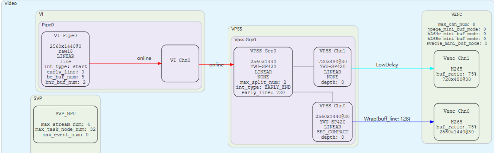


-
软件配置流程
-
配置SYS和VB，包含VI-VPSS工作模式，AIISP模式以及VB大小及个数等;
- 配置MIPIRX，配置LANE属性及分配模式;
- 配置VI，包含DEV、BIND、GROUP、PIPE和CHN的配置;
- 配置ISP;
- 配置VPSS;
- 配置VENC。
注意：以下章节无特殊说明起通路流程与此次保持一致，不再重复描写。
sample_vie_wdr
-
使用场景
WDR（Wide Dynamic Range，宽动态范围）是一种图像处理技术，主要用于改善在高对比度光照环境下拍摄的图像质量。在一些场景下，比如室内室外光线差异极大的地方，或者强光源直射的地方，普通的摄像头可能会因为过曝或欠曝而无法清晰地捕捉到所有细节。WDR技术通过结合不同曝光时间的多张图像来生成一张最终的图像，在这张图像中，亮部和暗部的细节都能得到较好的保留。这样就能使得在极端光照条件下也能获得更加自然、清晰的图像效果。
线性模式与WDR模式效果对比：
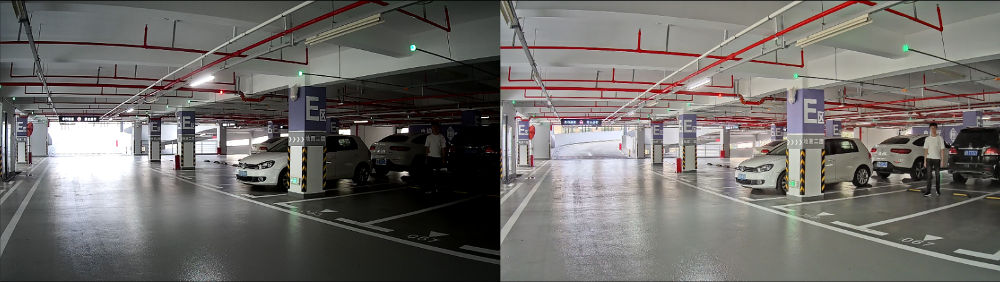
-
使用说明
- load脚本时需要使用参数profile=1，以20s为例，ko加载命令为 ./load3516cv610_20s_debug -a -profile 1;
- Hi3516CV610-10B默认的VICAP及ISP0频点较低，若需要接入WDR时序，需要更改SYS_CFG模块的HI3516CV610_10B_WDR宏值以接入WDR时序，详见《SYS_CFG 配置指南》。
- 默认SENSOR HY006_3814_0011_MIPI_4M_30FPS_10BIT不支持WDR模式，但是sample中预留HY006_3814_0011_MIPI_4M_30FPS_10BIT_WDR2TO1配置，若用户接入一个可支持WDR时序的SENSOR，可根据预留配置做适配。主要适配点包括（搜索关键字HY006_3814_0011_MIPI_4M_30FPS_10BIT_WDR2TO1适配即可）：
- 在Makefile中链接SENSOR库；
- 适配MIPI_RX属性；
- 适配ISP_PUB_ATTR属性；
- 适配VI、ISP宽高；
- 适配VI的PIPE路数；
- 适配WDR模式。
-
场景数据流
-
接口配置
-
根据SENSOR型号及序列确认WDR模式，例如帧WDR、行WDR;
- 根据数据场景选择VI是否在线；
- 若VI在线且处于行WDR模式，根据指导配置数据缓存卷绕行cache_line，可节省内存；
- 根据用户需求配置其他参数；
- VI绑定之后创建PIPE之前，调用ss_mpi_vi_set_wdr_fusion_grp_attr设置WDR组属性。


sample_vie_fpn
-
使用场景
固定模式噪声（Fixed Pattern Noise，FPN）是一种常见的图像传感器噪声类型，这种噪声通常是由于传感器内部的物理缺陷或不均匀性造成的。FPN可能导致图像中出现明显的条纹或斑点，影响图像的清晰度和对比度。Hi3516CV610提供去FPN功能，去除SENSOR产生的固定噪声，图像效果更佳。
-
场景数据流
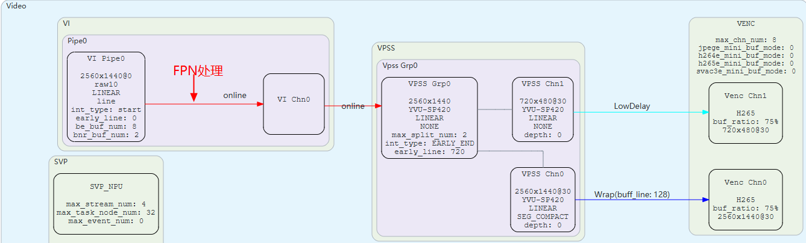
-
流程配置
-
正常起VI-VPSS-VENC通路；
- 调用ss_mpi_vb_create_pool接口创建池子，并调用ss_mpi_vb_get_blk接口准备黑帧VB;
- 调用ss_mpi_vi_disable_chn接口关闭通道；
- 调用ss_mpi_isp_fpn_calibrate接口启动标定；
- 标定结束后会输出一张黑帧，并保存到sample的同级目录下，再调用ss_mpi_vi_enable_chn接口使能通道；
-
读取保存的黑帧，并调用ss_mpi_isp_set_fpn_attr启动校正。
-
注意事项
-
写黑帧信息时会调用fwrite函数往DDR写数据，若同时写出多张黑帧可能会造成系统OOM。
- 如果标定时未遮住镜头，会把采集到的图像当成噪点处理，标定后图像呈现粉色。


sample_vie_ldc_rotation
-
使用场景
对SENSOR采集的数据或者用户送的数据进行固定角度旋转和LDC校正处理。
-
场景数据流图
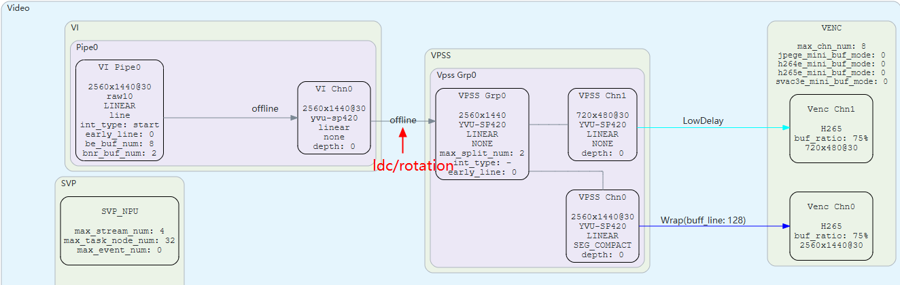
-
流程配置
-
正常起VI-VPSS-VENC通路；
- 选择所需的LDC类型，调用ss_mpi_vi_set_chn_ldc_attr启动LDC校正功能；
-
选择所需的旋转角度，调用ss_mpi_vi_set_chn_rotation启动旋转功能。
-
注意事项
-
仅支持VI-VPSS离线模式下使用；
- 仅支持固定角度旋转。


sample_vie_low_delay
-
使用场景
离线模式下，low_delay功能可降低数据接收到发送至后端模块之间的延时，即降低端到端延时。
关闭低延时效果：
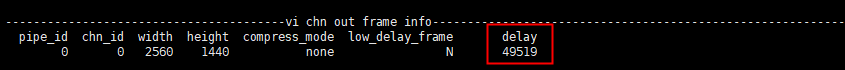
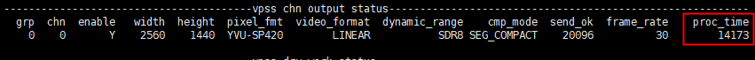
开启低延时效果：
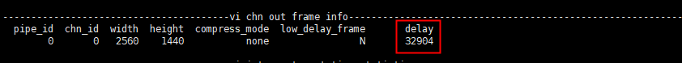
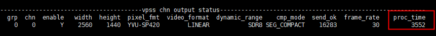
-
场景数据流
关闭低延时：
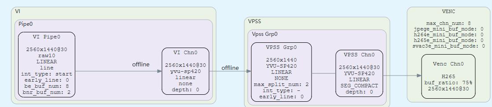
开启低延时：
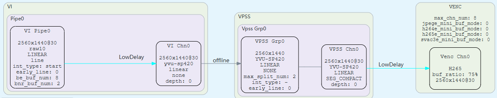
-
流程配置
-
正常起VI-VPSS-VENC通路；
- 调用ss_mpi_vi_set_pipe_low_delay接口使能vi_pipe低延时功能；
-
调用ss_mpi_vpss_set_chn_low_delay接口使能vpss_chn低延时功能。
-
注意事项
vi_chn支持输入输出低延时，但是vpss仅支持输出低延时，因此VI绑定VPSS时不能使能vi_chn低延时。
sample_vie_user_pic
-
使用场景
当用户数据流不稳定或者sensor断流时，使能用户图片功能显示自定义的图片，可以是logo等。
-
场景数据流
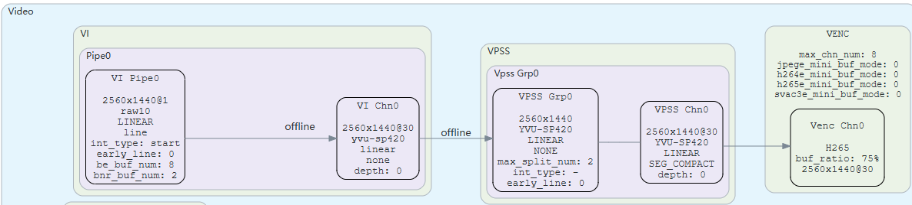
-
流程配置
-
正常起VI-VPSS-VENC通路；
- 调用ss_mpi_vi_set_pipe_user_pic接口设置需要显示的图片；
- 调用ss_mpi_vi_set_pipe_3dnr_attr接口关闭3DNR功能；
-
调用ss_mpi_vi_enable_pipe_user_pic接口使能用户图片功能。
-
注意事项
sample默认开启3DNR功能，使能用户图片前需要确保关闭3DNR，否则会因为有参考导致残影。
sample_vie_two_sensor
-
使用场景
VI有两个设备，可支持接入两路SENSOR。
-
场景数据流
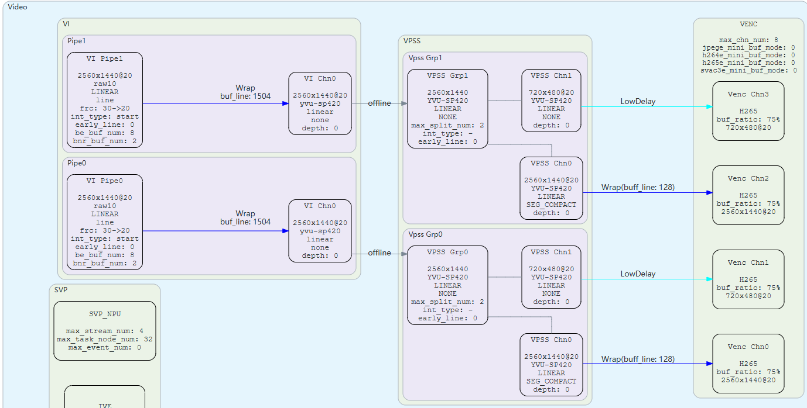
、 -
流程配置
-
确认两路SENSOR的I2C号，SENSOR0使用I2C0，默认SENSOR1使用I2C1；
- 确认MIPI LANE分配模式为LANE_DIVIDE_MODE_1， 并且确认两路的LANE_ID，使用ioctl(fd, OT_MIPI_SET_DEV_ATTR, combo_dev_attr)接口配置MIPI属性；
-
VI和ISP需要开启两路DEV和两路PIPE，DEV分别绑定PIPE，其他流程和单路基本一致。
-
注意事项
无
sample_vie_switch_mode


VI在线VPSS离线、VI离线VPSS在线、VI离线VPSS离线和VI在线VPSS在线流程和数据流基本一致，这里不一一描述。
-
流程步骤
-
正常启动VI和ISP线性通路；
- 正常退出VI通路，不退出ISP通路；
- 设置为WDR模式；
- 启动VI DEV、BIND、GROUP相关通路；
- 确认WDR切换是否完成(wdr_switch_finish)，参考ss_mpi_isp_query_inner_state_info接口；
-
切换成功后启动VI PIPE及CHN相关通路。
-
注意事项
无
sample_vie_switch_resolution
-
使用场景
该sample的主要展现前端模块MIPIRX和ISP动态裁剪分辨率的过程。从源数据进行裁剪，降低后端模块的带宽。
-
场景数据流


VI在线VPSS离线、VI离线VPSS在线、VI离线VPSS离线和VI在线VPSS在线流程和数据流基本一致，这里不一一描述。
-
流程步骤
-
正常启动VI-VPSS-VENC通路；
- 正常退出VI-VPSS-VENC通路，但不退出ISP；
- 更改MIPI_RX, ISP, VI, ISP, VENC模块的通路分辨率；
- 启动VI部分通路: DEV、BIND、GROUP；
- 确认分辨率切换是否完成（res_switch_finish），参考ss_mpi_isp_query_inner_state_info接口；
- 切换成功后启动VI完整通路（PIPE、CHN）；
-
启动VPSS-VENC通路。
-
注意事项
无
sample_vie_run_be_switch_mode
-
使用场景
在抓raw之后，离线调用BE处理的场景，ISP推荐使用run_be模式。
-
流程步骤
-
配置VI后，初始化ISP外部寄存器前，设置ISP控制参数中isp_run_wakeup_select为1（BE帧结束中断），参考ss_mpi_isp_set_ctrl_param接口。
- 从前往后启动ISP、VPSS、VENC模块。
- 从VI PIPE抓raw处理后并送回，参考ss_mpi_vi_get_pipe_frame、ss_mpi_vi_send_pipe_frame接口。
- 参考sample_vie_switch_mode切换WDR模式。
加载KO卡住
加载卡住原因：
- uboot烧写错误：使用Hi3516CV610-20S芯片，但烧写了Hi3516CV610-00S表格。
- pm.ko没有加载。
工具链问题
查看工具链安装路径：查看服务器环境变量 /etc/profile。
工具链安装后需要执行source /etc/profile生效。